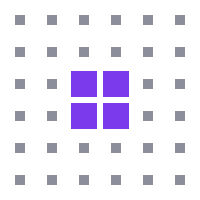

CustorianChild safety requirements for digital services — 155 controls across six domains, with certification and accreditation architecture.
ICS 35.030; 03.080.30
English version
Services numériques — Exigences de sécurité des enfants — Cadre pour la protection des mineurs dans les environnements numériques
Digitale Dienste — Anforderungen an die Kindersicherheit — Rahmenwerk zum Schutz Minderjähriger in digitalen Umgebungen
This draft European Standard was prepared by [CEN Technical Committee to be determined] in collaboration with CENELEC, and is submitted for [formal enquiry / CEN Workshop Agreement / Flex standard development — submission pathway to be confirmed with Dansk Standard].
This document is a draft distributed for review and comment. It is subject to change without notice and shall not be referred to as a European Standard until published.
Proposed by: Dansk Standard (DS), Denmark Secretariat: [To be assigned] Document stage: Working Draft (WD) v0.5 — for National Body review Document date: 2026-06-02 Editor: T.V. Becheva, on behalf of Foreningen Custorian (CVR 46399455, Odense, Denmark) Contact: tanya@custorian.org · custorian.org
| Clause | Title |
|---|---|
| Foreword | |
| Introduction | |
| 1 | Scope, including 1.0.1 Adult-only exclusion criteria, 1.1 Proportionality, and 1.2 Applicability by platform type |
| 2 | Normative references |
| 3 | Terms and definitions (27 terms) |
| 4 | Context of the organisation |
| 5 | Leadership and commitment, including 5.4 Independence and conflict of interest, 5.5 Child participation in organisational governance |
| 6 | Planning, including 6.1.2 Child safety risk assessment |
| 7 | Support |
| 8 | Operation — Child safety controls (155 controls across 6 domains) |
| 8.2 | CS-AC: Age controls (31 controls) |
| 8.3 | CS-CD: Content and design safety (37 controls) |
| 8.4 | CS-DM: Data and privacy for minors (19 controls) |
| 8.5 | CS-PR: Parental rights and controls (18 controls) |
| 8.6 | CS-MR: Monitoring, detection and response (33 controls) |
| 8.7 | CS-GO: Governance and policy (17 controls) |
| 9 | Performance evaluation (KPIs, internal audit, management review) |
| 10 | Improvement (nonconformity, corrective action) |
| Annex A | (normative) Complete control register |
| Annex B | (informative) Regulatory cross-reference table |
| Annex C | (informative) Certification architecture (size tier × scope tier) |
| Annex D | (informative) Advisory board and standard review process |
| Annex E | (informative) Applicability matrix by platform type |
| Bibliography |
This document (EN XXXXX:2026) has been prepared by [Technical Committee or CEN Workshop to be determined], the secretariat of which is held by [to be assigned].
This European Standard shall be given the status of a national standard, either by publication of an identical text or by endorsement, at the latest by [month] 2027, and conflicting national standards shall be withdrawn at the latest by [month] 2027.
Attention is drawn to the possibility that some of the elements of this document may be the subject of patent rights. CEN shall not be held responsible for identifying any or all such patent rights.
[NOTE: The following text applies only if a Commission standardisation request is issued. Until then, this document is proposed as a CEN Workshop Agreement.] This document has been prepared under a mandate given to CEN by the European Commission and the European Free Trade Association.
This document has been developed in recognition of the need for a harmonised European framework for the protection of children in digital environments. It provides a comprehensive set of controls, governance requirements, and assessment criteria that digital service providers can implement to demonstrate conformity with applicable European and national legislation concerning child safety online.
Relationship to European Union legislation
This standard has been developed to support conformity assessment with the obligations of the following European Union legislative instruments, in particular:
Internationally, the United Kingdom Age Appropriate Design Code (prepared under Section 123 of the Data Protection Act 2018, c. 12), the United Kingdom Online Safety Act 2023 (c. 50) and the Ofcom Highly Effective Age Assurance Guidance of 16 January 2025, the United States Children’s Online Privacy Protection Act (15 U.S.C. §§ 6501–6506) and the FTC’s 2025 Final Rule amending 16 CFR Part 312, and the United Nations Committee on the Rights of the Child General Comment No. 25 (CRC/C/GC/25, 2021) have informed the development of this standard. Each is cited as an informative benchmark, not a normative reference.
This standard is intended to support conformity assessment with the obligations of the DSA, in particular as those obligations relate to the protection of minors. The standard does not constitute a harmonised standard within the meaning of Regulation (EU) 1025/2012 until adopted as such by a recognised European Standardisation Organisation. Its current status is a working draft in the Dansk Standard pathway toward CEN/CENELEC, with a committee meeting scheduled for 31 August 2026.
NOTE 1: This European Standard is based on the Custorian Controls Framework (CCF) v0.2 (May 2026), owned by Foreningen Custorian (CVR 46399455, Denmark). The framework is published under an irrevocable open licence permitting any organisation to implement it without fee.
NOTE 2: The management system clauses (4 through 10) follow the Harmonised Structure of ISO/IEC Directives, Part 1, Annex SL. An organisation already certified to EN ISO/IEC 27001:2022 will find substantial structural overlap; an organisation already certified to EN ISO/IEC 27701:2019 (privacy information management) and EN ISO/IEC 27018:2019 (PII protection in public clouds acting as PII processors) will find further overlap in the data-protection control set.
NOTE 3 (v0.3 changes): This Working Draft v0.3 incorporates several substantive additions over the v0.2 version submitted at the May 2026 meeting with Dansk Standard. These are: a new Clause 1.0.1 setting out normative criteria for the adult-only exclusion in Clause 1; a new Clause 1.2 setting out applicability by platform type; control-level applicability notes at each domain heading in Clause 8; a new informative Annex E providing the full applicability matrix; and a fact-checked rebuild of the Bibliography against current public sources as at the document date.
NOTE 4 (v0.4 changes): This Working Draft v0.4 adds three controls following advisory review: CS-MR.10.4 (harm classifiers purpose-limited to detection, not surveillance), CS-MR.10.5 (detection datasets and models documented, benchmarked, and independently verifiable as effective), and CS-CD.3.6 (safety interventions evidence-based, with effectiveness measured and validated). Total controls: 149 (140 REQUIRED, 9 ADDRESSABLE).
NOTE 5 (v0.4.1 changes): CS-CD.1.1 reworded to be method-agnostic — the platform SHALL detect and action known CSAM by robust, industry-recognised methods, with hash-matching cited as the baseline example rather than a mandated technology. CS-CD.1.7 upgraded from ADDRESSABLE to REQUIRED (weight 2.0): the platform SHALL detect and action AI-generated / synthetic CSAM by appropriate available means and treat it as CSAM for response and reporting. Revised totals: 149 controls (141 REQUIRED, 8 ADDRESSABLE).
NOTE 6 (v0.5 changes): Six controls added following a full-register review — CS-DM.1.4 (detection SHALL NOT weaken end-to-end encryption; no server-side scanning of E2EE content), CS-CD.1.9 (detect attempts to move a child off-platform), CS-CD.1.10 (real-time abuse detection for live video), CS-CD.5.6 (children can block and mute any user), CS-CD.6.4 (recommendation/discovery SHALL NOT connect unconnected adults and children), and CS-MR.8.4 (child-safety impact assessment before launching features affecting children). Revisions: CS-AC.1.1 reframed to risk-proportionate age assurance; grooming (CS-CD.1.2), self-harm (CS-CD.1.4) and sextortion (CS-CD.1.6) detection weights raised to 1.5, with CS-CD.1.6 broadened beyond financial sextortion; the harm taxonomy in CS-MR.1.1/1.2 reconciled with the CS-CD detection categories; CS-MR.2.3 made authority-agnostic. Revised totals: 155 controls (147 REQUIRED, 8 ADDRESSABLE).
The digital environment presents both significant opportunities and serious risks for children. While digital services offer children access to education, socialisation, creative expression, and information, they also subject minors to significant risks including, but not limited to: sexual exploitation and abuse (including the production and distribution of child sexual abuse material), grooming by predators, bullying and harassment, self-harm and suicide promotion, violent and threatening content, financial sextortion, exploitative commercial practices, and manipulative design patterns.
The scale of these risks is substantial. According to data published by the National Center for Missing & Exploited Children (NCMEC), the CyberTipline received 36.2 million reports of suspected child sexual exploitation in 2023; the 2024 figure was 20.5 million reports containing approximately 63 million files (33.1 million videos, 28 million images, and just under 2 million other file types). The year-on-year decline is attributed by NCMEC primarily to the introduction in 2024 of a CyberTipline feature enabling large reporting providers to bundle related reports of the same widespread incident, which reduces the headline report count without reducing the count of distinct underlying instances. Year-on-year comparisons of CSAM report volumes are therefore sensitive to changes in reporting infrastructure, platform encryption defaults, and detection methodology, in addition to underlying prevalence. The emergence of generative artificial intelligence has introduced new vectors for harm, including AI-generated child sexual abuse material and sophisticated automated grooming techniques.
The protection of children is a fundamental right enshrined in Article 24 of the Charter of Fundamental Rights of the European Union, Article 3 of the United Nations Convention on the Rights of the Child (UNCRC), and the constitutions of all EU Member States. This right imposes positive obligations on both public authorities and private actors, including providers of digital services.
This standard recognises that digital environments provide children with significant benefits including access to education, social connection, creative expression, and information. The controls herein are designed to mitigate risks while preserving these opportunities. Disproportionate restriction of digital access may itself be harmful to children’s development and rights under Articles 13, 17, and 31 of the UNCRC.
NOTE: The temporary derogation to the EU ePrivacy Directive (Regulation (EU) 2021/1232, as extended, derogating from Articles 5(1), 5(3) and 6(1) of Directive 2002/58/EC), which provided the legal basis for voluntary detection of child sexual abuse material by providers of number-independent interpersonal communications services, ceased to apply on 3 April 2026. The proposed Regulation laying down rules to prevent and combat child sexual abuse (COM(2022) 209 final) remains in inter-institutional negotiation. This standard provides a compliance framework for child safety that is, by design, independent of the status of any specific derogation: CS-DM.1.1 requires on-device processing by default, with server-side processing of children’s communications for the purpose of threat detection permitted only under the conditions specified in that control. Whether a specific implementation falls within the scope of Article 5(3) of Directive 2002/58/EC in respect of the content of children’s communications is, in any given case, a matter for the relevant data protection authority and, where applicable, the competent court.
The European Union has established a comprehensive legislative framework relevant to child safety in digital environments:
Regulation (EU) 2022/2065 (DSA) establishes obligations for online platforms regarding illegal content, transparency, and the protection of minors. Article 28 requires platforms accessible to minors to implement appropriate measures to ensure a high level of privacy, safety, and security for minors. Articles 34-36 impose additional systemic risk assessment and mitigation obligations on very large online platforms and search engines (VLOPs/VLOSEs);
Regulation (EU) 2016/679 (GDPR) provides the foundational framework for the protection of children’s personal data, including Article 8 (conditions applicable to child’s consent in relation to information society services), Article 35 (data protection impact assessments), and Recital 38 (specific protection for children’s personal data);
Regulation (EU) 2024/1689 (AI Act) classifies AI systems intended to interact with children as high-risk in certain categories, imposing requirements for transparency, human oversight, accuracy, and non-discrimination;
Directive 2011/93/EU on combating the sexual abuse and sexual exploitation of children and child pornography establishes the legal framework for criminalisation and reporting of CSAM;
National implementations across EU Member States establish varying ages of digital consent (ranging from 13 to 16 years) and additional protective measures;
The proposed Regulation on preventing and combating child sexual abuse (COM(2022)209 final, see Bibliography [36]) is currently in legislative procedure. This standard is designed to support conformity with obligations that may arise from this Regulation upon adoption. The standard’s on-device processing architecture and detection requirements are aligned with the privacy-preserving detection approaches under discussion in the legislative process.
Internationally, the United Kingdom’s Age Appropriate Design Code (AADC) and Online Safety Act (OSA), the United States’ Children’s Online Privacy Protection Act (COPPA), and the principles of the United Nations Convention on the Rights of the Child (UNCRC) represent significant regulatory benchmarks that inform the controls in this standard.
Additional contemporary developments have informed the controls and the architecture of this standard:
EU Digital Identity Wallet (eIDAS 2.0). Regulation (EU) 2024/1183 amending Regulation (EU) 910/2014 requires every Member State to offer at least one European Digital Identity Wallet to its citizens by Q4 2026. EUDI Wallet provides selective-disclosure age attestations that materially advance the privacy-preserving age assurance approach adopted in CS-AC (see Bibliography [46]);
Ofcom guidance on age assurance (United Kingdom). Ofcom’s guidance issued under the Online Safety Act on “highly effective age assurance” provides methodological benchmarks that this standard’s CS-AC controls are designed to align with where applicable (see Bibliography [47]);
Australia Online Safety Amendment (Social Media Minimum Age) Act 2024. Australia’s legislation establishing 16 as the minimum age for independent social media account creation represents the first nation-state implementation of a hard age threshold for social media. Although outside the European regulatory perimeter, it constitutes a significant precedent that informs implementation considerations for CS-AC (see Bibliography [48]);
OECD Recommendation on Children in the Digital Environment (OECD/LEGAL/0389, 2021). A multilateral soft-law instrument with which this standard is aligned (see Bibliography [4]);
Council of Europe Convention 108+ (Convention for the Protection of Individuals with regard to the Processing of Personal Data). Provides the international data protection baseline against which the data minimisation requirements of CS-DM are calibrated (see Bibliography [49]).
Despite this extensive regulatory framework, no harmonised European standard currently exists that provides digital service providers with a comprehensive, auditable set of controls specifically addressing child safety. This gap creates several problems:
Digital service providers lack clear, measurable benchmarks for compliance with their obligations under the DSA, GDPR, and AI Act as they relate to children;
National regulatory authorities lack a common assessment framework, leading to fragmented enforcement;
Children and parents lack a reliable means of assessing the safety of digital services;
Cross-border provision of digital services is complicated by the absence of mutual recognition of child safety measures.
This standard addresses this gap by providing the controls specified in Clause 8 and Annex A, organised into six domains, supported by a management system framework compatible with EN ISO/IEC 27001.
This standard has been developed with reference to, and is intended to complement, the following existing and emerging standards:
The management system clauses (4 through 10) of this standard follow the Harmonised Structure (HS) specified in ISO/IEC Directives, Part 1, Consolidated ISO Supplement, Annex SL, to facilitate integration with other management system standards.
This standard comprises:
This document specifies requirements for a child safety management system for digital service providers. It establishes controls, governance requirements, and assessment criteria to protect the rights, safety, and wellbeing of children (natural persons under the age of 18) who use or are affected by digital services.
This standard is applicable to:
providers of intermediary services as defined in Regulation (EU) 2022/2065, Article 3(g), including hosting services, online platforms, and very large online platforms;
providers of information society services as defined in Directive (EU) 2015/1535, Article 1(1)(b), where such services are likely to be accessed by children;
providers of AI systems as defined in Regulation (EU) 2024/1689 where such systems interact with or process data of children;
any organisation that develops, operates, or maintains a digital product or service that is likely to be accessed by persons under the age of 18.
This standard is not applicable to:
services that are exclusively designed for and accessed by adults and that meet the criteria for adult-only exclusion specified in 1.0.1 below;
services that do not process personal data and do not involve user-generated content or user interaction;
physical safety requirements for hardware devices (covered by other standards in the EN 71 and IEC 62368 series).
A service may claim exclusion from the scope of this standard under (a) above only where all of the following conditions are demonstrably met. The criteria are normative; an auditor (or, in the absence of an audit relationship, a national competent authority on request) shall verify each condition.
Design intent. The service is, by published terms of service and by demonstrable design choices (content, marketing, registration flow, advertising posture), targeted exclusively at adults. Mixed-audience services and services likely to be accessed by children within the meaning of Section 123(4) of the UK Data Protection Act 2018 / ICO Children’s Code do not qualify.
Highly effective age assurance. The service implements an age assurance method that meets at minimum one of the methods Ofcom considers capable of being “highly effective” under its January 2025 guidance on Highly Effective Age Assurance (HEAA) issued under the Online Safety Act 2023 — namely photo-ID matching, facial age estimation, mobile-network-operator age checks, credit-card or banking-data checks, or attestations from a digital identity service such as the European Digital Identity Wallet under Regulation (EU) 2024/1183. Self-declaration of age, payment methods for which the cardholder need not be a stated age, warnings and disclaimers, and general contractual restrictions do not satisfy this condition.
External verification. The age assurance method has been subject to verification by an independent body within the preceding 24 months. Verification by the operator alone, or by a body controlled by the operator, does not satisfy this condition.
Operational metrics. The service publishes annual aggregate metrics on age assurance: the count of attempted accesses denied as suspected minors, the count of escalations to manual review, the count of accounts terminated post-registration on grounds of suspected minor status, and the most recent measured false-pass rate at the relevant age threshold.
Inadvertent access response. The service has a documented procedure for the case in which a child has, despite the above, accessed the service: immediate termination of the session, deletion of any data collected in the session in accordance with GDPR Articles 5(1)(c) and 17, and, where the content the child may have been exposed to is likely to constitute a serious risk to the child’s safety, a notification to the parent (where contact information is lawfully available) and, in cases involving suspected criminal content, a report to the competent national authority and through INHOPE where applicable.
Cooperation with the framework. The service does not market itself as outside the protective intent of this standard. It commits, in its terms of service, to cooperate with national regulators and Child Advocacy Bodies in the event that the age assurance method is found in operation to be inadequate.
NOTE: This sub-clause closes the self-certification loophole that would otherwise allow any platform to declare itself “adult-only” without external accountability. The intent is consistent with the policy direction taken by Ofcom under sections 11(3) and 49 of the Online Safety Act 2023 and with the ICO’s interpretation of Section 123 of the Data Protection Act 2018 regarding services “likely to be accessed by children.” A service that fails to meet 1.0.1(b)–(f) is not entitled to the exclusion in (a) and is within the scope of this standard.
The controls specified in Clause 8 and Annex A are classified as either:
NOTE: The term “addressable” is used in preference to “optional” to indicate that these controls represent good practice and that a conscious decision, supported by risk assessment, is required where they are not implemented.
The implementation of controls specified in this standard SHALL be proportionate to:
the nature, scale, and complexity of the digital service;
the size of the user base and the proportion of users who are children;
the risk profile of the service in relation to the threat categories specified in 3.15;
the resources available to the organisation.
NOTE 1: This standard recognises that the implementation burden differs significantly between very large online platforms (as defined in DSA Article 33) and smaller service providers. Organisations SHOULD prioritise implementation of required controls with the highest weight factors (as specified in Annex A) where resource constraints exist.
NOTE 2: Organisations SHALL document their proportionality assessment, including any required controls that cannot be fully implemented immediately, together with a remediation timeline.
This standard provides for a certification architecture (see Annex C) using two orthogonal axes: a size axis (Size Tier 1 through Size Tier 4, based on the population of minor users) and a scope axis (Essential, Comprehensive, Leadership, based on the breadth of controls implemented). Every certified organisation is described by a coordinate of (size tier, scope tier).
The scope axis enables progressive adoption:
The size axis determines the assessment instrument and audit cadence and is defined in Annex C.2.
Not every control in Clause 8 applies to every digital service. The Custorian framework deliberately covers a broad range of service categories — messaging and communication, social networking and user-generated content, gaming, streaming and content delivery, AI and conversational systems, online marketplaces, and search and information services — because the threats children face are not uniformly distributed across them. This sub-clause defines seven platform-type categories used throughout this standard and in Annex E (Applicability matrix). An auditor SHALL use these categories to scope the engagement; an organisation operating a service that falls into more than one category SHALL apply the union of applicable controls.
Category PT-1 — Messaging and communication services. Services whose principal function is the exchange of interpersonal communications, including text, voice, and video messaging, whether or not end-to-end encrypted. Examples include messaging applications, email services, and number-independent interpersonal communications services within the meaning of Directive (EU) 2018/1972 (European Electronic Communications Code) Article 2(7). Controls in CS-MR (Monitoring, Detection and Response) related to CSAM and grooming detection (CS-MR.2.x), and controls in CS-DM (Data and Privacy for Minors) related to on-device processing (CS-DM.1.1), are particularly load-bearing for this category.
Category PT-2 — Social networking and user-generated content services. Services whose principal function is the publication and discovery of user-generated content, including text posts, images, videos, livestreams, and comments. Examples include social networks, video-sharing platforms within the meaning of Directive 2010/13/EU (Audiovisual Media Services Directive) Article 1(1)(aa), and forums. The full CS-CD (Content and Design Safety) domain, including dark-pattern controls (CS-CD.2.x), is particularly load-bearing for this category. DSA Articles 28, 34, 35, and 36 obligations apply where the service is designated a very large online platform under Article 33.
Category PT-3 — Gaming services. Services whose principal function is the delivery of interactive entertainment, including mobile games, console games, online multiplayer games, and game streaming services. Voice and text chat between players is in scope of CS-MR controls where present. In-game purchase controls (CS-CD.7.x, CS-PR.x) and the parental dashboard requirements (CS-PR.1.x) are particularly load-bearing for this category. Where the service hosts user-generated content, Category PT-2 controls also apply.
Category PT-4 — Streaming and content delivery services. Services whose principal function is the delivery of professionally curated audio, video, or text content to users, including video-on-demand services, music streaming, and digital news platforms. Recommendation-algorithm controls (CS-CD.6.x), advertising controls (CS-CD.7.x), and age-appropriate content controls (CS-CD.1.x) are particularly load-bearing.
Category PT-5 — AI and conversational services. Services whose principal function is the provision of generative AI outputs, conversational agents, AI companions, or AI-mediated information retrieval. AI Act obligations apply per Regulation (EU) 2024/1689, in particular Article 5(1)(b) on exploitation of vulnerabilities of children and Article 50 on transparency. Controls related to manipulative design (CS-CD.2.x), age-appropriate content (CS-CD.1.x), and on-device processing where applicable (CS-DM.1.x) are particularly load-bearing.
Category PT-6 — Marketplaces and transactional services. Services whose principal function is the facilitation of transactions between users, including consumer marketplaces, peer-to-peer marketplaces, and ticketing platforms. Commercial practice controls (CS-CD.7.x), parental purchase authorisation (CS-PR.x), and DSA Article 30 traceability obligations are particularly load-bearing where children are users of the service.
Category PT-7 — Search and information services. Services whose principal function is the indexing and retrieval of third-party content, including general search engines, vertical search services, and information aggregators. Where designated as a very large online search engine under DSA Article 33, the systemic risk controls in CS-MR.8 apply. Recommendation and ranking controls (CS-CD.6.x) and harmful content surfacing controls (CS-CD.1.x) are particularly load-bearing.
NOTE 1: A service may fall into more than one category. An auditor SHALL apply the union of controls applicable to each category. For example, a video-sharing platform that also runs a marketplace for creators is in PT-2, PT-4, and PT-6 simultaneously.
NOTE 2: Categories PT-1 through PT-7 do not constitute legal categories within the meaning of any specific instrument. They are operational categories used in this standard to scope conformity assessment. The legal status of a service under the DSA, AI Act, or other instrument is determined under those instruments and is unaffected by its categorisation here.
NOTE 3: Annex E (informative) provides the full applicability matrix mapping each of the 155 controls to the seven platform-type categories, with each control marked as All (applies to all in-scope services), Conditional (applies only where the underlying functional condition is present, with the condition stated), or Not applicable (the control addresses a functional capability the service does not have).
Implementation timelines, expressed by reference to the scope axis and tied to the size axis:
For very large online platforms and search engines (VLOPs/VLOSEs) and other Size Tier 1 organisations: Comprehensive within 12 months of first certification; Leadership within 24 months.
For Size Tier 2 organisations (online platforms with 100 000 to 1 000 000 minor users): Essential within 18 months; Comprehensive within 30 months.
For Size Tier 3 and Size Tier 4 organisations: Essential within 24 months; Comprehensive recommended within 36 months where resources permit.
The mapping of size tier to minimum scope tier is set out in Annex C.4.
The following documents are referred to in the text in such a way that some or all of their content constitutes requirements of this document. For dated references, only the edition cited applies. For undated references, the latest edition of the referenced document (including any amendments) applies.
2.1 Regulation (EU) 2022/2065 of the European Parliament and of the Council of 19 October 2022 on a Single Market For Digital Services and amending Directive 2000/31/EC (Digital Services Act — DSA)
2.2 Regulation (EU) 2016/679 of the European Parliament and of the Council of 27 April 2016 on the protection of natural persons with regard to the processing of personal data and on the free movement of such data (General Data Protection Regulation — GDPR)
2.3 Regulation (EU) 2024/1689 of the European Parliament and of the Council of 13 June 2024 laying down harmonised rules on artificial intelligence (AI Act)
2.4 United Nations Convention on the Rights of the Child (UNCRC), adopted 20 November 1989, entry into force 2 September 1990
2.5 United Nations Committee on the Rights of the Child, General Comment No. 25 (2021) on children’s rights in relation to the digital environment. CRC/C/GC/25
2.6 Directive 2011/93/EU of the European Parliament and of the Council of 13 December 2011 on combating the sexual abuse and sexual exploitation of children and child pornography
2.7 Regulation (EU) 910/2014 of the European Parliament and of the Council of 23 July 2014 on electronic identification and trust services for electronic transactions in the internal market (eIDAS Regulation)
2.8 EN ISO/IEC 27001:2022 — Information security, cybersecurity and privacy protection — Information security management systems — Requirements
2.9 ISO/IEC 27000:2018 — Information security management systems — Overview and vocabulary
For the purposes of this document, the following terms and definitions apply.
ISO and IEC maintain terminology databases for use in standardisation at the following addresses:
natural person under the age of 18
NOTE 1: This definition is consistent with Article 1 of the United Nations Convention on the Rights of the Child (2.7).
NOTE 2: For the purposes of specific controls in this standard, children are further classified into age brackets: 8–10, 11–12, 13–15, and 16–17. The boundaries of these brackets reflect developmental stages and are aligned with the range of ages of digital consent established across EU Member States (13 to 16 years).
information society service as defined in Regulation (EU) 2022/2065, Article 3(a)
NOTE: This includes any service normally provided for remuneration, at a distance, by electronic means and at the individual request of a recipient.
intermediary service, as defined in Regulation (EU) 2022/2065, Article 3(i), that allows users to store or disseminate information to the public
NOTE: This includes, but is not limited to, social media services, messaging services, video-sharing platforms, gaming platforms, and online marketplaces.
process of determining with a high degree of certainty whether a user meets a minimum age requirement
NOTE: Age verification methods include, but are not limited to, identity document verification, digital identity credentials, and database cross-referencing. See also 3.6.
probabilistic assessment of a user’s age based on signals such as facial analysis, behavioural analysis, or device-level indicators, where the result is expressed as a probability or confidence interval rather than a definitive determination
umbrella term encompassing both age verification (3.4) and age estimation (3.5), referring to any process or combination of processes used to establish whether a user is above or below a specified age threshold
user interface design, user experience technique, or choice architecture that materially distorts or impairs the ability of users, and particularly children, to make free, informed, and autonomous decisions
NOTE: This definition is consistent with Regulation (EU) 2022/2065, Article 25(1), which prohibits online platforms from designing, organising, or operating their online interfaces in a way that deceives or manipulates recipients of their service.
child sexual abuse material as defined in Directive 2011/93/EU, Article 2(c), including any material that visually depicts a child engaged in real or simulated sexually explicit conduct, or any depiction of the sexual organs of a child for primarily sexual purposes
NOTE: For the purposes of this standard, CSAM includes AI-generated imagery that meets this definition, consistent with evolving interpretations under the AI Act (2.3).
process by which a person builds a relationship, trust, and emotional connection with a child with the objective of manipulating, exploiting, or abusing them, including but not limited to sexual exploitation
NOTE 1: This definition is consistent with the offence of solicitation of children for sexual purposes as established in Directive 2011/93/EU, Article 6, and the Council of Europe Convention on the Protection of Children against Sexual Exploitation and Sexual Abuse (Lanzarote Convention, CETS No. 201), Article 23.
NOTE 2: Online grooming may involve techniques such as flattery, gift-giving, isolation, desensitisation to sexual content, and the creation of secrecy.
coercion of a child through the use or threatened use of intimate, sexual, or compromising images, recordings, or information to obtain further sexual material, sexual acts, money, or other benefits
NOTE: While “sextortion” is not yet a separately defined offence in EU law, the conduct falls within the scope of Directive 2011/93/EU, Articles 4 and 5 (sexual exploitation and coercion). The term is used by Europol (see [17]), the FBI, and NCMEC (see [16]) to describe a specific and growing pattern of offending against minors. Financial sextortion — where the objective is monetary rather than sexual — has been identified as a rapidly increasing threat category affecting children, particularly adolescent boys.
data processing performed locally on the user’s device (terminal equipment) without transmitting the raw data to external servers
NOTE: On-device processing is the default method recommended by this standard for child safety threat detection, as it minimises the collection and centralised storage of children’s communications and personal data, in accordance with the principles of data minimisation (GDPR, Article 5(1)(c)) and privacy by design (GDPR, Article 25).
consent given by the holder of parental responsibility over a child, as referred to in Regulation (EU) 2016/679, Article 8(1)
NOTE: The applicable age threshold for parental consent varies across EU Member States, from 13 to 16 years pursuant to the Article 8 GDPR derogation. In Denmark, the threshold is set under Databeskyttelsesloven, Section 6a; the consolidated text in force at the date of certification should be consulted (see Bibliography [35]).
design philosophy and practice that considers the best interests and evolving capacities of children at every stage of development, design, deployment, and operation of a digital service
NOTE: This concept is central to the UK Age Appropriate Design Code (see Bibliography [32]) and is reflected in Article 28(1) of the DSA (2.1).
system behaviour that defaults to the maximum level of protection for the user when conditions are uncertain, ambiguous, or when a process (such as age verification) cannot be completed
EXAMPLE: When age verification cannot determine whether a user is under 18, the system applies the protections associated with the 13-15 age bracket by default, or the 8-10 bracket where no age signals are available at all.
classification of online harms to children, comprising the following categories as used in this standard:
organisation that is authorised or accredited by a national accreditation body, in accordance with Regulation (EC) No 765/2008, to assess conformity of digital service providers with the requirements of this standard
organisation that is accredited by a national accreditation body to conduct conformity assessments under this standard, meeting the requirements set out in Annex C
NOTE: Approved assessment bodies may be certification bodies (3.16) that have obtained specific accreditation for assessments under this standard.
measure that modifies risk, including policies, procedures, guidelines, organisational structures, and technical implementations, which can be of an administrative, technical, management, or legal nature
NOTE: This definition is consistent with ISO/IEC 27000:2018, 3.14.
control identified in Annex A as “REQUIRED” that SHALL be implemented by the organisation in order to claim conformity with this standard
NOTE: Required controls are indicated by the use of “SHALL” in the control statement.
control identified in Annex A as “ADDRESSABLE” that SHOULD be implemented by the organisation; where an addressable control is not implemented, the organisation SHALL document the risk-based justification for non-implementation and demonstrate that the associated risk is managed by alternative means
NOTE: Addressable controls are indicated by the use of “SHOULD” in the control statement.
classification of children by age range for the purpose of applying differentiated controls, comprising:
NOTE: Children under 8 may access digital services. Where this standard does not specify controls for the 0-7 bracket, the protections of the 8-10 bracket SHALL apply by default. Service providers specifically targeting children under 8 SHOULD implement additional age-appropriate protections informed by early childhood development research.
designated natural person within the organisation who holds operational responsibility for the implementation, maintenance, and oversight of the child safety management system established under this standard
assessment of whether content is appropriate for consumption by a child within a specific age bracket, considering developmental impact, emotional wellbeing, and the best interests of the child
parental consent (3.12) obtained through a mechanism that provides a reasonable level of assurance that the person providing consent is in fact the holder of parental responsibility, and is not the child or another unauthorised person
systematic assessment of the impact of a digital service on the rights of children, including but not limited to: the right to privacy (UNCRC Article 16), protection from harm (Article 19), access to information (Article 17), freedom of expression (Article 13), rest and leisure (Article 31), and the best interests principle (Article 3)
NOTE: A CRIA complements but is distinct from a data protection impact assessment (DPIA) under GDPR Article 35. A DPIA focuses on data processing risks; a CRIA addresses the broader impact on children’s rights and wellbeing.
the skills, knowledge, and understanding that enable a child to use digital services safely, critically, and creatively, including the ability to recognise online risks, protect personal information, and seek help when needed
encryption scheme in which only the communicating parties can read the messages, with no intermediary — including the service provider — having access to the cryptographic keys needed to decrypt the content
The organisation SHALL determine external and internal issues that are relevant to its purpose and that affect its ability to achieve the intended outcomes of its child safety management system.
The organisation SHALL consider:
the nature and scope of the digital services it provides;
the age demographics of its actual and reasonably foreseeable user base, including children who may access the service without the organisation’s knowledge;
the threat categories (3.15) relevant to its services;
the applicable legal and regulatory requirements in each jurisdiction in which the service is available or reasonably accessible to children;
the technological capabilities and limitations affecting the implementation of child safety controls;
industry developments and emerging threats to child safety in digital environments.
Where the organisation provides services employing end-to-end encryption (3.27), the organisation SHALL document how the child safety controls in Clause 8 are implemented without compromising encryption. The organisation SHALL consider on-device processing (3.11) as the primary mechanism for threat detection in encrypted environments. The organisation SHALL NOT be required to weaken or circumvent encryption to comply with this standard, provided that alternative measures achieving equivalent protection are documented and implemented.
NOTE: This standard recognises the tension between privacy-preserving encryption and content-based threat detection. The position of this standard is that encryption protects all users including children, and that safety measures should work with, not against, encryption architectures.
The organisation SHALL determine:
the interested parties that are relevant to the child safety management system;
the requirements of those interested parties relevant to child safety.
Interested parties SHALL include, at a minimum:
The organisation SHALL determine the boundaries and applicability of the child safety management system to establish its scope.
The scope SHALL cover all digital services provided by the organisation that are accessible to children, including:
The scope SHALL be documented and made available upon request by regulatory authorities.
The organisation SHALL establish, implement, maintain, and continually improve a child safety management system, including the processes needed and their interactions, in accordance with the requirements of this standard.
The child safety management system SHALL be integrated with the organisation’s existing management systems, including its information security management system (where one exists), quality management system, and privacy management system.
Top management SHALL demonstrate leadership and commitment with respect to the child safety management system by:
ensuring that the child safety policy and child safety objectives are established and are compatible with the strategic direction of the organisation;
ensuring the integration of child safety management system requirements into the organisation’s business processes;
ensuring that the resources needed for the child safety management system are available;
communicating the importance of effective child safety management and of conforming to the requirements of this standard;
ensuring that the child safety management system achieves its intended outcomes;
directing and supporting persons to contribute to the effectiveness of the child safety management system;
promoting continual improvement;
supporting other relevant management roles to demonstrate their leadership as it applies to their areas of responsibility;
designating a Child Safety Officer (CSO) in accordance with control CS-GO.1.1;
ensuring that child safety considerations are integrated into product development and service design processes from inception (safety by design).
NOTE: The reference to “top management” in this clause may be satisfied by a board-level or C-suite officer within the organisation. In smaller organisations, this may be the owner or managing director.
Top management SHALL establish a child safety policy that:
is appropriate to the purpose of the organisation;
includes a commitment to satisfy applicable requirements related to child safety;
includes a commitment to the best interests of the child as a primary consideration in all decisions;
includes a commitment to continual improvement of the child safety management system;
references the applicable legal requirements (DSA, GDPR, AI Act, and applicable national laws);
is available as documented information;
is communicated within the organisation;
is available to interested parties, as appropriate;
is published in a form that is accessible and comprehensible to children, using age-appropriate language.
Top management SHALL ensure that the responsibilities and authorities for roles relevant to child safety are assigned and communicated within the organisation.
Top management SHALL assign the responsibility and authority for:
ensuring that the child safety management system conforms to the requirements of this standard;
reporting on the performance of the child safety management system to top management;
acting as the point of contact for regulatory authorities on matters relating to child safety;
coordinating with law enforcement in respect of CSAM and other criminal matters involving children;
overseeing the training and competence of staff involved in child safety operations.
Top management SHALL establish, document, and maintain procedures to identify and manage conflicts of interest that could compromise the integrity of decisions taken under the child safety management system. These procedures SHALL, as a minimum:
require the Child Safety Officer (CSO) and any other person with decision-making authority over child safety controls to declare, on appointment and at least annually thereafter, any financial, employment, advisory, or familial interest that could reasonably be perceived to affect their independence in matters relating to children’s safety;
require recusal from any decision, deliberation, or vote that materially affects an organisation, product, vendor, or service in which a declared interest exists;
require that the assessment of conformity with this standard within the organisation is not directed by personnel whose performance metrics or compensation are determined principally by commercial outcomes that the assessment is intended to scrutinise;
prohibit the assignment of safeguarding-critical responsibilities (in particular, those concerning age determination accuracy, CSAM detection, and reporting to competent authorities) to individuals subject to commercial performance incentives that could conflict with those responsibilities;
require that records of declarations and recusals are retained as documented information for a period of not less than five years and are available to the certification body on request.
NOTE 1: This sub-clause addresses conflicts of interest at the level of the certified organisation. Governance of the certification scheme itself, including conflict of interest procedures applicable to the scheme owner, the advisory board, and approved assessment bodies, is addressed in Annex D and in the scheme rules of the certification body operating under accreditation pursuant to Regulation (EC) No 765/2008.
NOTE 2: Where the certified organisation, or its parent, ultimate beneficial owner, or principal shareholder, is a platform within the scope of this standard, the procedures under (a)–(e) SHALL ensure that no individual with a controlling commercial interest in the organisation participates in decisions that affect the organisation’s own certification status under this standard.
Top management SHALL ensure that the perspectives of children, and of persons with lived experience of online harms suffered as children, are reflected in the design, operation, and review of the child safety management system. The organisation SHALL document the mechanism by which this is achieved, which may include:
age-appropriate user research, consultation panels, or co-design processes involving children, conducted with appropriate safeguards and, where required, parental consent;
standing advisory arrangements with civil society organisations representing children, including survivor-led organisations where reasonably available;
periodic review of safety incidents, complaints, and content reports filed by child users, with documented action arising from that review.
The intent is that children and survivors are heard as participants in the operation of the system, not solely as subjects of it. Participation SHALL be age-appropriate, informed, voluntary, and conducted with appropriate safeguarding measures (see CS-GO.7.x).
When planning for the child safety management system, the organisation SHALL consider the issues referred to in 4.1 and the requirements referred to in 4.2 and determine the risks and opportunities that need to be addressed to:
ensure the child safety management system can achieve its intended outcomes;
prevent, or reduce, harm to children;
achieve continual improvement.
The organisation SHALL plan:
actions to address these risks and opportunities;
how to integrate and implement the actions into its child safety management system processes;
how to evaluate the effectiveness of these actions.
The organisation SHALL define and apply a child safety risk assessment process that:
establishes and maintains child safety risk criteria, including risk acceptance criteria based on the best interests of the child, the severity of potential harm, the likelihood of occurrence, and the vulnerability of the affected age bracket(s);
ensures that repeated risk assessments produce consistent, valid, and comparable results;
identifies child safety risks by applying the risk assessment process to identify risks associated with the loss of confidentiality, integrity, and availability of children’s data, and risks to the physical and psychological safety and wellbeing of children;
assesses each identified risk against the seven threat categories (3.15);
analyses child safety risks by assessing the realistic likelihood and severity of harm for each identified risk, considering the specific vulnerabilities of each age bracket (3.21);
evaluates child safety risks by comparing the results of risk analysis with the established risk criteria and prioritising the risks for treatment.
The child safety risk assessment SHALL be conducted:
The organisation SHALL define and apply a child safety risk treatment process to:
select appropriate child safety risk treatment options, taking account of the risk assessment results;
determine all controls that are necessary to implement the child safety risk treatment option(s) chosen;
compare the controls determined above with the controls in Annex A and verify that no necessary controls have been omitted;
produce a Statement of Applicability that contains:
formulate a child safety risk treatment plan;
obtain risk owner approval of the child safety risk treatment plan and acceptance of the residual child safety risks.
NOTE: A risk in the context of child safety can never be fully “accepted” where the risk involves potential illegal harm to a child (e.g., CSAM, grooming). The risk acceptance criteria SHALL reflect legal obligations to prevent and report such harms.
The organisation SHALL establish child safety objectives at relevant functions, levels, and processes.
The child safety objectives SHALL:
be consistent with the child safety policy;
be measurable;
take into account applicable child safety requirements, and results from risk assessment and risk treatment;
be monitored;
be communicated;
be updated as appropriate.
The child safety objectives SHALL include, at a minimum:
The organisation SHALL retain documented information on the child safety objectives.
When planning how to achieve its child safety objectives, the organisation SHALL determine:
The organisation SHALL determine and provide the resources needed for the establishment, implementation, maintenance, and continual improvement of the child safety management system.
Resources SHALL include, at a minimum:
qualified personnel for child safety operations, including content moderation, threat detection oversight, and incident response;
technology infrastructure for the implementation of the controls specified in Clause 8;
access to specialist expertise, including child psychology, child welfare, law enforcement liaison, and legal counsel;
budget allocation for the child safety management system, commensurate with the scale and risk profile of the services provided.
The organisation SHALL:
determine the necessary competence of person(s) doing work under its control that affects child safety;
ensure that these persons are competent on the basis of appropriate education, training, or experience;
where applicable, take actions to acquire the necessary competence, and evaluate the effectiveness of the actions taken;
retain appropriate documented information as evidence of competence.
Specific competence requirements SHALL include:
Persons doing work under the organisation’s control SHALL be aware of:
The organisation SHALL determine the need for internal and external communications relevant to the child safety management system, including:
External communications SHALL include:
The organisation’s child safety management system SHALL include:
documented information required by this standard;
documented information determined by the organisation as being necessary for the effectiveness of the child safety management system.
When creating and updating documented information, the organisation SHALL ensure appropriate identification, description, format, media, review, and approval.
Documented information required by the child safety management system and by this standard SHALL be controlled to ensure:
it is available and suitable for use, where and when it is needed;
it is adequately protected (e.g., from loss of confidentiality, improper use, or loss of integrity);
it is retained for the period required by applicable law, including evidence preservation requirements for child safety incidents.
This clause specifies the child safety controls that constitute the operational requirements of this standard. The controls are organised into six domains:
| Domain | Code | Title | Controls |
|---|---|---|---|
| 8.2 | CS-AC | Age Controls | 31 |
| 8.3 | CS-CD | Content and Design Safety | 37 |
| 8.4 | CS-DM | Data and Privacy for Minors | 19 |
| 8.5 | CS-PR | Parental Rights and Controls | 18 |
| 8.6 | CS-MR | Monitoring, Detection and Response | 33 |
| 8.7 | CS-GO | Governance and Policy | 17 |
| Total | 155 |
Each control is presented with the following attributes:
The organisation SHALL implement all REQUIRED controls and SHALL document the justification for any ADDRESSABLE control that is not implemented.
NOTE 1: The complete control register with all metadata is provided in Annex A (normative). The presentation in Clauses 8.2 through 8.7 provides normative requirements and implementation guidance.
NOTE 2: The six control domains organise requirements by functional area (age controls, content safety, data privacy, parental rights, detection and response, governance). The seven threat categories defined in 3.15 describe the types of harm that detection and response systems must address. Controls in multiple domains may reference the same threat categories. The distinction between domains and threat categories is intentional: domains structure what organisations must do; threat categories define what harms must be addressed.
NOTE 3: Certain controls in this clause reference the AI Act (Regulation (EU) 2024/1689) in the context of AI systems that may be classified as high-risk under Annex III. Where the AI system in question does not meet the high-risk classification, the AI Act citation is informative rather than normative. Organisations should assess whether their specific AI systems fall within the scope of the AI Act’s high-risk classification when determining the normative force of AI Act references in individual controls.
NOTE — Applicability: All 31 controls in this domain apply to all platform types (PT-1 through PT-7) where the service is likely to be accessed by children, on the principle that determining whether a user is a child is a precondition for any other protective measure. CS-AC.1.4 (EUDI Wallet attestation acceptance) is conditional on the service operating in an EU Member State where the EUDI Wallet is available. See Annex E for the full mapping.
To ensure that the digital service accurately determines the age of its users, applies age-appropriate protections, and prevents circumvention of age-based restrictions, in accordance with Regulation (EU) 2022/2065, Article 28(1), and the principle of age-appropriate design.
CS-AC.1.1 The platform SHALL implement age assurance proportionate to the risks the service presents to children.
NOTE: Age verification is the foundational control upon which all other age-differentiated protections depend. The elevated weight of 1.5 reflects the systemic importance of this control.
EXAMPLE: Acceptable age verification methods include identity document verification, eIDAS digital identity credentials, age estimation based on facial analysis (subject to accuracy and bias requirements), and credit card or mobile operator verification. Self-declaration alone is not acceptable (see CS-AC.1.3).
CS-AC.1.2 Age verification SHALL use at least two independent signals.
NOTE: The use of multiple signals reduces the risk of circumvention and improves accuracy. Independent signals may include different verification methods, different data sources, or a combination of verification and estimation techniques.
CS-AC.1.3 Self-declared age SHALL NOT be the sole verification method.
NOTE: Research consistently demonstrates that self-declaration alone is ineffective in preventing children from accessing age-restricted services. This control requires that self-declaration, if used, be supplemented by at least one independent verification or estimation signal.
CS-AC.1.4 The platform SHOULD support eIDAS digital age credentials, including European Digital Identity Wallet (EUDI Wallet) age attestations, when available.
NOTE 1: Regulation (EU) 2024/1183 (eIDAS 2.0) requires every Member State to offer at least one European Digital Identity Wallet to its citizens by Q4 2026. EUDI Wallet age attestations provide selective disclosure (proof of an age claim without revealing the underlying date of birth or identity), satisfying the data minimisation requirement in CS-AC.1.5 while providing the highest available assurance level.
NOTE 2: Where EUDI Wallet age attestation is presented by the user, it SHALL count as one of the independent signals required by CS-AC.1.2. Acceptance of EUDI Wallet credentials SHALL be implemented in conformity with the relevant EUDI Wallet Architecture and Reference Framework version applicable at the time of integration.
NOTE 3: Pending broad availability of EUDI Wallet across Member States, equivalent national eID schemes (e.g., MitID in Denmark, BankID in Sweden and Norway, SPID in Italy, France Identité, German Personalausweis) provide an acceptable transitional pathway.
CS-AC.1.5 Age verification SHALL NOT collect more data than necessary.
NOTE: The age verification process should be designed to confirm only whether a user meets a specified age threshold, without collecting or retaining additional personal data. Where biometric data is processed (e.g., facial age estimation), the data SHALL be deleted immediately after the age determination is made.
CS-AC.1.6 Age assurance methods used in conformity with this standard SHALL meet documented minimum accuracy thresholds.
The following minimum thresholds SHALL be met:
Identity document verification and eIDAS digital identity credentials (including EUDI Wallet): cryptographic verification SHALL succeed before the credential is accepted. False acceptance rate (FAR) SHALL NOT exceed 0.1%;
Age estimation from facial analysis: mean absolute error (MAE) SHALL NOT exceed 2.0 years for the 13–19 age range. The proportion of users incorrectly classified across the 13/18 decision boundary SHALL NOT exceed 5%;
Behavioural and contextual signals (e.g., usage patterns, device signals): SHALL be used only as supplementary signals supporting CS-AC.1.2 and SHALL NOT be the basis for a primary age determination.
NOTE 1: The elevated weight of 1.5 reflects that age assurance accuracy is the basis on which all age-differentiated protections rest. A standard that does not specify thresholds is gameable; published thresholds provide regulators and auditors with measurable benchmarks.
NOTE 2: Accuracy metrics SHALL be reported separately for the demographic categories specified in CS-AC.6.3 (non-discrimination). Aggregate accuracy that masks differential performance across protected categories does not satisfy this control.
NOTE 3: Thresholds in this control are minimums. Organisations SHOULD adopt stricter thresholds where the risk profile of their service warrants. The advisory board (Annex D) will review and may revise these thresholds annually as age assurance technology evolves.
CS-AC.2.1 When age cannot be verified, the system SHALL default to the 13-15 age bracket unless secondary age signals are available, in which case the system SHALL apply the bracket corresponding to the best available estimate. Where no age signal is available at all, the system SHALL apply the 8-10 bracket protections.
NOTE 1: The fail-safe to 13-15 rather than 8-10 balances safety with usability. Research shows that excessively restrictive defaults drive older children to circumvent or abandon safety systems, resulting in less protection overall.
NOTE 2: The fail-safe default principle ensures that uncertainty about a user’s age results in the application of protective settings. This is consistent with the precautionary principle and the best interests of the child (UNCRC Article 3).
CS-AC.2.2 If primary verification fails, the system SHALL fall back to secondary signals.
CS-AC.2.3 All age verification events SHALL be logged for audit.
NOTE: Logs SHALL include the verification method used, the timestamp, the result (verified/unverified), and the age bracket applied. Logs SHALL NOT include raw biometric data or copies of identity documents beyond the retention period required for the verification process.
CS-AC.3.1 Settings SHALL be maximally restrictive by default for child accounts.
NOTE: This control implements the “high privacy by default” principle of the AADC. Children and parents may relax settings, subject to the age-differentiated limitations specified in other controls, but the starting position SHALL be maximum restriction.
CS-AC.3.2 Default settings SHALL differ by age bracket (8–10, 11–12, 13–15, 16–17).
NOTE: The purpose of differentiated defaults is to reflect children’s evolving capacities, as recognised in UNCRC Article 5. Younger children require more restrictive defaults; older adolescents are granted greater agency while maintaining core protections.
EXAMPLE: A platform might allow 16–17 year-olds to have public profiles by default (with opt-out), while 8–10 year-olds have strictly private profiles with no ability to make them public.
CS-AC.3.3 Location sharing SHALL be off by default for all minors.
CS-AC.4.1 Age-restricted features SHALL be actually gated, not just labelled.
NOTE: A label or warning that can be dismissed is not sufficient. Age-restricted features SHALL be technically inaccessible to users who have not been verified as meeting the required age threshold.
CS-AC.4.2 Direct messaging from strangers SHALL be disabled by default for under-16.
NOTE: The elevated weight reflects the established role of direct messaging as the primary channel for grooming. “Strangers” means users who are not in the child’s approved contacts list.
CS-AC.4.3 Public profile visibility SHALL be off by default for under-16.
CS-AC.4.4 In-app purchases SHALL require parental approval for under-16.
CS-AC.4.5 Live streaming SHALL be disabled by default for under-16.
NOTE: Live streaming presents particular risks for children, including real-time contact abuse, solicitation, and the generation of live CSAM. The inability to moderate content in real time before transmission makes this feature inherently high-risk for younger users.
CS-AC.5.1 The platform SHOULD periodically re-verify age for accounts approaching thresholds.
NOTE: As children age, their protections should evolve accordingly. Periodic re-verification ensures that age bracket transitions are timely and accurate.
CS-AC.5.2 Users SHALL NOT be able to change their age without re-verification.
CS-AC.6.1 Age verification methods SHALL be documented and publicly available.
CS-AC.6.2 Accuracy rates of age verification SHOULD be published.
NOTE: Publication of accuracy rates promotes transparency and enables independent evaluation. Accuracy rates should be reported disaggregated by age bracket, method, and, where relevant, demographic group (to assess potential bias).
CS-AC.6.3 Age verification SHALL NOT discriminate based on disability, ethnicity, or socioeconomic status.
NOTE: Facial age estimation in particular carries documented risks of bias across ethnic groups and for persons with certain disabilities. Organisations using such methods SHALL conduct and publish bias assessments.
CS-AC.7.1 Verifiable parental consent SHALL be obtained before processing data of children under the applicable consent age.
NOTE: The applicable consent age is determined by the law of the Member State in which the child is resident, pursuant to the Article 8 GDPR derogation. In Denmark, this is set by Databeskyttelsesloven, Section 6a (consolidated text in force at the date of certification). Where the child’s jurisdiction cannot be determined, the highest applicable consent age within the EU (currently 16 years) SHALL be applied.
CS-AC.7.2 The parental consent mechanism SHALL be robust against child impersonation.
NOTE: The mechanism SHALL include measures to verify that the person providing consent is in fact the holder of parental responsibility and not the child or another minor. Acceptable methods include, but are not limited to, credit card verification, video call verification, identity document verification, and eIDAS-based digital identity.
NOTE — Applicability: This subclause applies only where facial age estimation is used as an age assurance method. The objective is that an assigned age band reliably reflects a user’s actual age, cannot be trivially falsified by presenting or injecting another person’s face, and governs every channel through which one user can reach another.
CS-AC.8.1 Where facial age estimation is used, its accuracy SHALL be established by an independent evaluation (e.g. NIST FATE Age Estimation & Verification) and not by vendor self-report, and SHALL be documented for the 13–17 age band as mean absolute error (MAE) and as false-positive rate at each decision boundary the system enforces.
CS-AC.8.2 A defined MAE ceiling and boundary false-positive rate SHALL be met for the 13–17 cohort. The threshold is set by the Standards Council and reviewed annually; the current baseline is an independently-measured MAE of no more than 2.0 years for the 13–17 band, with a documented challenge (buffer) age applied at each band boundary to absorb residual error.
NOTE: The MAE ≤ 2.0 years baseline is a policy threshold owned by the Standards Council, derived from current independent benchmark results; it is reviewed annually and is not asserted as a regulator-prescribed value.
CS-AC.8.3 The capture pipeline SHALL implement presentation-attack detection (PAD) evaluated to ISO/IEC 30107-3 at a named assurance level (e.g. iBeta Level 1 and Level 2), with a current certificate on file. A still image or replayed video of a face SHALL fail the check.
CS-AC.8.4 The pipeline SHALL detect attacks that defeat estimation with a face the system should not accept, comprising at least: (a) injection attacks — virtual-camera and synthetic or deepfake feeds delivered past the physical sensor; and (b) verification-by-proxy — a genuine third party (for example a parent or older sibling) presenting their own live face to clear the check on a younger user’s behalf. The verified face SHALL be bound to the account’s actual user and not merely to any qualifying adult face that passes liveness. Where no accredited injection-attack benchmark yet exists, the operator SHALL document its detection methodology and test against a defined adversarial set that includes a verification-by-proxy scenario.
NOTE: Verification-by-proxy is the failure mode auditors most often overlook — the age check is not technically beaten but is delegated to a compliant adult. There is not yet a mature accredited benchmark for injection-attack or proxy detection equivalent to ISO/IEC 30107-3 for PAD; this control is therefore a Framework watch item and will be tightened as the standards landscape matures.
CS-AC.8.5 Any fallback path (for example document verification on disputed estimates) SHALL be held to an anti-fraud standard equivalent to the primary method, so that a weaker fallback does not reopen the gap the primary method closes.
CS-AC.8.6 The assigned age band SHALL govern all contact surfaces — including in-experience chat, direct messages, party and voice channels, live collaboration, and non-chat in-experience social mechanics through which contact can be initiated. The operator SHALL maintain a contact-surface inventory demonstrating gate coverage.
NOTE: Gating text chat while leaving other contact paths open allows the age gate to be bypassed without ever being defeated. The contact-surface inventory exists to make full-surface coverage auditable.
CS-AC.8.7 Accuracy figures, the benchmark source, PAD and injection-attack certifications, and re-test dates SHALL be disclosed to certifying auditors and re-validated at least annually or on any material model change.
NOTE — Applicability: Of the 32 controls in this domain, the harmful content detection controls (CS-CD.1.x) and the dark pattern controls (CS-CD.2.x) apply to all platform types where content is presented to children. The advertising and commercial practice controls (CS-CD.7.x) apply principally to PT-2, PT-3, PT-4, PT-6 and to any PT-1 service that incorporates advertising. The algorithmic safety and recommendation controls (CS-CD.6.x) apply principally to PT-2, PT-4, PT-7 and to any PT-3 service incorporating recommendation. CS-CD.5 (content moderation and reporting) is not applicable to PT-1 services that do not host user-discoverable content. See Annex E for the full mapping.
To ensure that digital services detect, prevent, and respond to harmful content, and that the design of services does not exploit or harm children through manipulative design patterns, in accordance with Regulation (EU) 2022/2065, Articles 14, 16, 25, 26, 28, and 38, and the principle of safety by design.
CS-CD.1.1 The platform SHALL detect and action known CSAM using robust, industry-recognised detection methods.
NOTE: The elevated weight of 2.0 reflects the severity of CSAM and the legal obligation to detect and report it. This requirement is method-agnostic: hash-matching against recognised databases (for example PhotoDNA, CSAI Match, and hash sets maintained by NCMEC, IWF, and other recognised organisations) is the current baseline expectation, and equivalent or more effective methods are acceptable. Confirmed detection SHALL trigger immediate action in accordance with CS-MR.2.1. Detection of novel or AI-generated CSAM is addressed in CS-CD.1.7.
CS-CD.1.2 The platform SHALL detect grooming patterns in communications.
NOTE: Grooming detection may employ natural language processing, behavioural pattern analysis, and network analysis. Detection SHALL respect the privacy principles specified in CS-DM, particularly on-device processing (CS-DM.1.1).
CS-CD.1.3 The platform SHALL detect bullying and harassment patterns.
CS-CD.1.4 The platform SHALL detect self-harm and suicidal content.
NOTE: Self-harm detection SHALL be sensitive to context. Content that promotes or glorifies self-harm SHALL be treated differently from help-seeking behaviour or recovery narratives. Interventions SHALL prioritise connecting the child with appropriate support services (see CS-PR.5.2).
CS-CD.1.5 The platform SHALL detect violent threat content.
CS-CD.1.6 The platform SHALL detect sextortion patterns (financial and image-based coercion).
NOTE: Financial sextortion of minors has increased significantly and often follows identifiable patterns involving requests for intimate images followed by threats and payment demands. Detection may include analysis of communication patterns, payment-related language, and image-sharing behaviours.
CS-CD.1.7 The platform SHALL detect and action AI-generated and other synthetic CSAM by appropriate available means, and SHALL treat confirmed synthetic CSAM as CSAM for response and reporting purposes.
NOTE: Synthetic CSAM may not match existing hash databases. Appropriate means include AI classifier models trained to identify synthetic content, content-provenance signals (for example C2PA), and watermark analysis. Where the platform offers generative-AI or image/video surfaces, applicable detection SHALL be implemented; where reliable automated detection is not yet technically feasible, the platform SHALL document the limitation and its remediation plan, and SHALL in all cases action synthetic CSAM identified by any means, reporting it in accordance with CS-MR.2.1. Advanced synthetic-content detection remains an area of active development; this control will be reviewed as the technology matures.
CS-CD.1.8 Detection SHALL be effective across all supported languages.
NOTE: Detection accuracy SHALL be measured and reported per language. Where detection capability in a specific language falls below acceptable thresholds (as defined in the organisation’s child safety objectives), the organisation SHALL implement compensatory measures, which may include increased human moderation in that language.
CS-CD.1.9 The platform SHALL detect and flag attempts to move a child to another platform or private channel.
NOTE: Persuading a child to continue a conversation on a different service is a well-established grooming indicator. Detection of off-platform migration attempts forms part of grooming detection (CS-CD.1.2) and SHALL trigger age-appropriate intervention.
CS-CD.1.10 Where live streaming or real-time video involving children is available, the platform SHALL apply real-time abuse detection appropriate to that surface.
NOTE: Live and real-time video is a high-risk vector for grooming and the production of CSAM. This control is conditionally applicable to services offering live streaming or real-time video to or featuring children; where such surfaces are absent, it does not apply.
CS-CD.2.1 The platform SHALL NOT use infinite scroll for child accounts.
NOTE: Infinite scroll is a design pattern that encourages continuous, open-ended use and is associated with excessive screen time and compulsive usage patterns. Child accounts SHALL implement natural stopping points (e.g., pagination, time-based prompts, or content-limited feeds).
CS-CD.2.2 The platform SHALL NOT use notification pressure tactics (FOMO, streaks, urgency).
NOTE: Notification pressure tactics include, but are not limited to: streak mechanics that penalise non-use, fear-of-missing-out language, artificial urgency (countdown timers for non-time-limited activities), and social pressure notifications (“X friends are online now”).
CS-CD.2.3 Loot boxes and randomised rewards SHALL be clearly labelled with odds.
CS-CD.2.4 The platform SHALL NOT use deceptive design to trick children into sharing data.
CS-CD.2.5 Disabling safety features SHALL require more effort than enabling them.
NOTE: This is the “asymmetric friction” principle. If a child can disable a safety feature with one tap, but enabling it requires navigating three screens, the design incentivises reduced safety. The reverse SHALL be the case.
CS-CD.2.6 Autoplay SHALL be off by default for child accounts.
CS-CD.3.1 AI may classify content but SHALL NOT generate child-facing intervention text.
NOTE: Intervention text presented to children SHALL be pre-authored by qualified professionals (e.g., child psychologists, safeguarding specialists) and selected based on AI classification output. Generative AI SHALL NOT compose free-text messages to children in safety-critical contexts due to the risk of inappropriate, harmful, or misleading responses.
CS-CD.3.2 Intervention language SHALL be age-appropriate for the child’s verified age bracket.
NOTE: A safety intervention presented to an 8-year-old SHALL use different vocabulary, complexity, and emotional tone than one presented to a 16-year-old. Interventions SHALL be reviewed by child development professionals.
CS-CD.3.3 Interventions SHALL be culturally reviewed for each supported language/region.
NOTE: Safety interventions SHALL be reviewed for cultural appropriateness, including consideration of regional crisis helpline numbers, cultural attitudes toward mental health, and linguistic nuances. Direct translation without cultural review is not sufficient.
CS-CD.3.4 No dialogue loop — the system SHALL NOT sustain conversation with children in safety-critical contexts.
NOTE: When a safety intervention is triggered, the system SHALL present information and options (e.g., contact a helpline, talk to a trusted adult, block a user) but SHALL NOT engage in conversational interaction with the child. The risk of an AI system providing inappropriate advice in a crisis is too high to be acceptable.
CS-CD.3.5 Intervention content SHALL be version-controlled and publicly auditable.
NOTE: All intervention text, translations, and version histories SHALL be maintained under version control and SHALL be available for review by regulatory authorities and, where practicable, by independent child safety researchers.
CS-CD.3.6 Safety interventions SHALL be evidence-based, and their effectiveness in preventing or reducing harm SHALL be measured and periodically validated.
NOTE: Intervention designs SHALL be grounded in published research or validated safeguarding practice. The operator SHALL define outcome measures indicating whether an intervention prevents or reduces harm (for example: cessation of a risky interaction, uptake of a safe option such as contacting a trusted adult or helpline, or reduction in repeat incidents) and SHALL review interventions at planned intervals. Interventions that do not demonstrably reduce harm SHALL be revised or withdrawn. Effectiveness measurement SHALL rely on aggregate, privacy-preserving metrics and SHALL NOT introduce additional surveillance of the child.
CS-CD.4.1 Child-facing interventions SHALL be compatible with screen readers.
CS-CD.4.2 Intervention text SHALL meet WCAG 2.1 AA contrast and readability requirements.
NOTE: Reference is to Web Content Accessibility Guidelines (WCAG) 2.1, Level AA, published by the World Wide Web Consortium (W3C). Minimum contrast ratio of 4.5:1 for normal text and 3:1 for large text.
CS-CD.4.3 Crisis helpline actions SHALL be accessible to children using assistive input.
NOTE: Children using switch access, voice control, eye tracking, or other assistive technologies SHALL be able to access crisis helpline functionality with the same ease as children using standard input methods.
CS-CD.5.1 User reports SHALL be acknowledged within 24 hours.
CS-CD.5.2 Illegal content SHALL be actioned within 24 hours of reporting.
NOTE: “Actioned” means that a determination has been made and, where the content is confirmed as illegal, it has been removed or access to it has been disabled. CSAM is subject to the more stringent 1-hour reporting requirement in CS-MR.2.1.
CS-CD.5.3 Content moderation policies SHALL be published and child-comprehensible.
NOTE: In accordance with Article 14(6) of the DSA, information provided to minors SHALL be concise, easily accessible, easy to understand, and in clear and plain language.
CS-CD.5.4 An appeals process SHALL be available and accessible to children.
NOTE: The appeals process SHALL be designed so that children can use it without requiring adult assistance. Where parental consent is required for certain actions, the appeals process itself SHALL be accessible to the child.
CS-CD.5.5 Where the organisation assigns an age bracket (3.21) to a user, the user SHALL have access to a mechanism to challenge the assigned age bracket. The appeal process SHALL provide a timely response and SHALL offer alternative verification methods.
NOTE: Age classification errors can result in disproportionate restrictions that impair the user experience. An accessible appeal mechanism ensures that users are not permanently subject to incorrect age bracket assignments.
CS-CD.5.6 Children SHALL be able to block and mute any user easily, and blocked users SHALL NOT be able to contact, view, or re-establish contact with the child.
NOTE: Blocking and muting are baseline safety tools. The action SHALL require no more steps than initiating contact, and a block SHALL persist across new accounts or re-registration by the same user where technically detectable.
CS-CD.6.1 The recommendation algorithm SHALL NOT amplify harmful content to child accounts.
NOTE: “Amplify” means to recommend, prioritise, or increase the visibility of content beyond what the user has explicitly sought. Harmful content includes all seven threat categories (3.15) as well as content that is age-inappropriate for the specific child’s verified age bracket.
CS-CD.6.2 Children SHALL be able to opt out of personalised recommendations.
CS-CD.6.3 A non-personalised content feed SHOULD be available as the default option.
NOTE: Making non-personalised feeds the default reduces the risk of filter bubbles and algorithmic amplification of harmful content. Where personalised feeds are available, the opt-out mechanism (CS-CD.6.2) SHALL be prominent and easy to use.
CS-CD.6.4 Recommendation and discovery systems SHALL NOT suggest child accounts to unconnected adults, nor suggest unconnected adults to children.
NOTE: Algorithmic connection of adults to children (“people you may know”, friend and follow suggestions, proximity discovery) is a primary grooming vector. This control applies to all recommendation, suggestion, and discovery surfaces that can initiate contact between users.
CS-CD.7.1 Targeted advertising SHALL NOT be served to children under 18.
NOTE 1: This control implements the prohibition in DSA Article 28(2) on presenting advertisements to minors based on profiling, in accordance with Regulation (EU) 2022/2065, Article 28(2), which prohibits profiling-based advertising to all minors. Contextual advertising (based on the content being viewed, not on user profiling) is not prohibited by this control.
CS-CD.7.2 Advertisements served to children SHALL be clearly labelled as advertising.
NOTE: Labelling SHALL be prominent, unambiguous, and comprehensible to children in the relevant age bracket. Influencer marketing and sponsored content SHALL be labelled with equal clarity.
NOTE — Applicability: All 18 controls in this domain apply to all platform types that process personal data of children. CS-DM.1.1 (on-device processing by default) is normatively binding for PT-1 services where detection of harm in private communications is performed; for PT-2 through PT-7 it applies to any detection processing of children’s personal data that could be performed on the user’s terminal equipment in accordance with the state of the art. CS-DM.4.x (data governance for children, including CRIA) applies to all platform types. See Annex E for the full mapping.
To ensure that the collection, processing, and storage of children’s personal data is minimised, transparent, and conducted in accordance with the principles of data protection by design and by default, as required by Regulation (EU) 2016/679, Article 25, and the principle that children merit specific protection with regard to their personal data (GDPR, Recital 38).
CS-DM.1.1 Threat detection processing of children’s communications and personal data SHALL be performed on the user’s terminal equipment by default. Server-side processing for the purpose of threat detection SHALL be permitted only where:
on-device processing is technically infeasible for the specific threat category, having regard to the state of the art at the time of certification; and
the organisation has documented this infeasibility in a Children’s Rights Impact Assessment conducted in accordance with CS-GO.7.x; and
the server-side processing is limited to the minimum data necessary, retained for no longer than necessary, and accompanied by compensatory privacy measures (including, where applicable, pseudonymisation, restricted access, and contractual prohibitions on secondary use).
NOTE 1: The on-device-by-default principle reflects the architectural choice that distinguishes this standard’s approach from server-side scanning models. Where children’s communications are processed on the user’s terminal equipment and only detection outputs (category, severity, timestamp) are transmitted beyond the device, the processing falls outside the scope of Article 5(3) of Directive 2002/58/EC in respect of the content of those communications. Whether a specific implementation satisfies that condition is, in any given case, a matter for the relevant data protection authority and, where applicable, the competent court.
NOTE 2: The elevated weight of 1.5 reflects the fundamental importance of this architectural choice for protecting children’s privacy while enabling safety monitoring. Documentation of infeasibility under (a)–(c) above SHALL be made available to the certification body and, on request, to the competent supervisory authority.
NOTE 3: Where criminal content (including CSAM) is detected through on-device processing, the organisation SHALL ensure that sufficient evidence is preserved and transmitted to enable a legally valid report to the competent designated authority. On-device detection that cannot produce evidence suitable for legal process does not satisfy this standard’s reporting requirements (CS-MR.2.1, CS-MR.5.1).
CS-DM.1.2 The platform SHALL only collect data necessary for core functionality.
CS-DM.1.3 Data collection scope SHALL be documented and transparent.
NOTE: Documentation SHALL include a clear, child-comprehensible description of what data is collected, why it is collected, how long it is retained, and with whom it is shared. The AADC requires that privacy information is “bite-sized”, using layered notices with a concise top layer.
CS-DM.1.4 Threat detection SHALL NOT require weakening or bypassing end-to-end encryption, and server-side scanning of end-to-end-encrypted content SHALL NOT be used.
NOTE: Where communications are end-to-end encrypted, any threat detection SHALL operate on-device (see CS-DM.1.1) so that no party other than the intended recipients can access message content. This control makes explicit that protection under this standard is achieved without building surveillance infrastructure or degrading encryption for any user.
CS-DM.2.1 All embedded SDKs SHALL be documented with data practices.
NOTE: The documentation SHALL include: the name and provider of each SDK, the categories of data collected, the purposes of processing, the data destinations (including country), and the data retention period. This information SHALL be included in the platform’s privacy policy and SHALL be updated whenever SDKs are added, removed, or modified.
CS-DM.2.2 Analytics and tracking SDKs SHALL NOT profile children.
NOTE: Profiling means any form of automated processing of personal data consisting of the use of personal data to evaluate certain personal aspects relating to a natural person (GDPR Article 4(4)). Aggregated, anonymised analytics that do not identify individual children are not prohibited by this control.
CS-DM.2.3 Third-party data processing agreements (DPAs) SHALL cover children’s data.
NOTE: DPAs with third-party processors SHALL include specific provisions regarding the processing of children’s data, including limitations on purpose, retention, and onward transfer. Generic DPAs that do not address children’s data are not sufficient.
CS-DM.3.1 Consent SHALL be informed, granular, and age-appropriate.
NOTE: Consent interfaces presented to children SHALL use language appropriate to the child’s age bracket. Bundled consent (requiring agreement to all data processing as a condition of using the service) does not meet this requirement.
CS-DM.3.2 Consent withdrawal SHALL be as easy as giving consent.
NOTE: If consent was given by tapping a single button, withdrawal SHALL be achievable with equivalent ease. Requiring the user to navigate to a settings page, scroll to a subsection, and complete multiple steps to withdraw consent does not meet this requirement.
CS-DM.3.3 Pre-ticked consent boxes SHALL NOT be used.
CS-DM.4.1 A Data Protection Impact Assessment (DPIA) SHALL be completed for child data processing.
NOTE: A DPIA is mandatory under GDPR Article 35(1) where processing is “likely to result in a high risk to the rights and freedoms of natural persons”. Processing of children’s data is, by its nature, likely to result in high risk (see GDPR Recital 38, Article 35(3)(b)). The DPIA SHALL specifically assess risks to children as a vulnerable population.
CS-DM.4.2 The organisation SHALL conduct a children’s rights impact assessment (CRIA) (3.25) for any digital service likely to be accessed by children. The CRIA SHALL be conducted before launch and updated annually, and SHALL assess impact on children’s rights to privacy, protection, participation, and development.
NOTE: A CRIA complements but is distinct from a DPIA. While a DPIA focuses on data processing risks, a CRIA addresses the broader impact on children’s rights and wellbeing, including rights to participation, play, and access to information.
CS-DM.4.3 Children’s data SHALL have defined retention periods and automatic deletion.
NOTE: Retention periods SHALL be documented and SHALL be the minimum necessary for the stated purpose. Automatic deletion mechanisms SHALL be implemented to ensure that data is not retained beyond the specified period.
CS-DM.4.4 Children (or parents) SHALL be able to export their data.
CS-DM.4.5 Children (or parents) SHALL be able to delete their data and account.
NOTE: Deletion SHALL be actual deletion, not merely deactivation or archiving. The exception is data that is required to be retained by law (e.g., evidence preservation obligations for CSAM reports).
CS-DM.5.1 Children’s data SHALL be stored in compliance with data residency requirements.
NOTE: Where children’s data is transferred outside the European Economic Area, the transfer SHALL comply with GDPR Chapter V, including the use of adequacy decisions, standard contractual clauses, or binding corporate rules, as applicable.
CS-DM.5.2 Children’s data SHALL be encrypted in transit and at rest.
NOTE: Encryption in transit SHALL use TLS 1.2 or higher. Encryption at rest SHALL use AES-256 or equivalent. Key management procedures SHALL comply with industry standards (e.g., NIST SP 800-57).
CS-DM.6.1 Automated profiling of children SHALL NOT be used beyond core safety.
NOTE: “Core safety” means the threat detection and content moderation functions specified in this standard. Profiling for advertising, content personalisation beyond safety purposes, or behavioural prediction is not permitted for child accounts.
CS-DM.6.2 Precise geolocation SHALL NOT be collected from children unless essential and consented.
NOTE: “Precise geolocation” means GPS-level location data accurate to within approximately 50 metres. City-level or country-level geolocation for the purpose of regulatory compliance (e.g., determining applicable consent age) is not prohibited by this control, provided it is the minimum necessary.
NOTE — Applicability: All 18 controls in this domain apply to all platform types where a child user has a holder of parental responsibility within the meaning of Council Regulation (EU) 2019/1111 (Brussels IIb). CS-PR.1.x (parental dashboard) is conditional on the existence of a parent-of-record relationship verifiable through national identity infrastructure (e.g. via the Parental Linkage Attribute under eIDAS 2.0 where available) and SHALL NOT be implemented in a manner that defeats the child-advocacy provisions of CS-PR.5 (crisis support) or the Safety Lane mechanism. See Annex E for the full mapping.
To ensure that parents and holders of parental responsibility are provided with effective tools to oversee their child’s safety online, while respecting the child’s evolving right to privacy, autonomy, and dignity, in accordance with UNCRC Articles 3, 5, and 16, and GDPR Article 8.
NOTE: This domain addresses a fundamental tension in child protection: the need to empower parents to protect their children while respecting the child’s independent right to privacy. The controls in this domain resolve this tension by ensuring that parental oversight focuses on safety alerts and risk categories, not on the content of children’s communications.
CS-PR.1.1 The platform SHALL provide a parental control dashboard. The dashboard SHALL display, at minimum:
the monitoring status of the child account (active / inactive / paused);
the child’s verified or estimated age bracket (8–10, 11–12, 13–15, 16–17) and the date on which the account will reach the age of majority for monitoring purposes (age-out date, per CS-PR.6.1);
a count of safety alerts in the preceding 30 days, broken down by threat category (per the seven categories defined in 3.15) and by severity level;
the date of the most recent safety policy update affecting the child’s account, with a link to the change summary;
the contact information for the platform’s child safety team and a route to the crisis helpline (per CS-PR.5.2).
NOTE: A dashboard that does not display the minimum content specified in this control does not satisfy the requirement. Platforms SHALL NOT ship empty or substantially empty dashboards as conformity evidence.
CS-PR.1.2 The dashboard SHALL show safety alerts, not message content.
NOTE: This is a critical design principle. The parental dashboard provides situational awareness (e.g., “a grooming pattern was detected in a conversation at 14:32 on 15 March”) without exposing the content of the child’s communications. See CS-PR.2.1 for the reinforcing control.
CS-PR.1.3 The dashboard SHALL be accessible on the parent’s device.
NOTE: The dashboard SHALL be accessible via a dedicated application, web interface, or both. It SHALL NOT require the parent to have access to the child’s device.
CS-PR.1.4 The platform SHALL accommodate child accounts under the responsibility of more than one parent or guardian.
The platform SHALL:
allow up to four persons holding parental responsibility to receive dashboard access for the same child account, subject to verification under CS-AC.7.1 and 7.2;
ensure that adding, modifying, or removing a parental access holder requires consent from at least one currently authorised parent or, where a court order requires it, from the holder of legal custody;
record changes to the parental access list in the audit log (per CS-AC.2.3) and notify all existing parental access holders of any change.
NOTE 1: This control addresses the reality of shared custody, stepfamilies, and other multi-guardian arrangements. A single-parent dashboard model excludes legitimate guardians from safety information about the child.
NOTE 2: Where parents are in conflict (e.g., contested custody), the platform SHALL act in accordance with applicable family law and any court orders. Where the platform receives conflicting instructions from authorised guardians, the platform SHALL apply the more protective configuration to the child account pending resolution.
NOTE 3: For parents with low digital literacy or without access to a smartphone, the platform SHALL provide at least one non-digital channel (e.g., SMS, email, postal summary, or telephone contact with the platform’s child safety team) for receiving safety alerts of high or critical severity.
CS-PR.2.1 Parents SHALL NEVER see message content — alerts contain category, severity, and timestamp only.
NOTE: The elevated weight of 1.5 reflects the fundamental importance of this control to the privacy architecture of this standard. Alert metadata SHALL contain: threat category (from the seven categories defined in 3.15), severity level (e.g., low, medium, high, critical), and timestamp. It SHALL NOT contain: message text, excerpts, keywords, recipient identifiers, or any information that would allow the parent to reconstruct the content of the communication.
EXAMPLE: An acceptable alert: “HIGH severity — Grooming pattern detected — 14 March 2026 14:32 — Action recommended: talk to your child.” An unacceptable alert: “HIGH severity — Adult user ‘John42’ sent messages containing [keywords] to your child.”
CS-PR.2.2 Parents SHALL NOT be able to enable keyword-level monitoring.
NOTE: Keyword monitoring (allowing parents to specify words that trigger alerts when used by their child) is a form of content surveillance that is inconsistent with the privacy architecture of this standard. The threat detection system (CS-MR) provides safety monitoring without exposing content.
CS-PR.2.3 Alert metadata SHALL NOT allow reconstruction of message content.
NOTE: This control addresses the risk that granular metadata (e.g., message length, word count, timing patterns, recipient details) could be combined to infer message content. Metadata SHALL be aggregated and abstracted to a level that prevents such reconstruction.
CS-PR.3.1 Children aged 13+ SHALL be notified that monitoring is active — non-configurable.
NOTE 1: The elevated weight reflects the fundamental ethical principle that covert surveillance of children is not acceptable. Children aged 13 and above SHALL be informed, through a persistent and visible indicator, that safety monitoring is active on their account. This notification SHALL NOT be capable of being hidden or disabled by the parent.
NOTE 2: The notification SHALL be visible only to the account holder and SHALL NOT be visible to other users of the service.
CS-PR.3.2 The notification SHALL explain what is monitored and why in age-appropriate language.
NOTE: The notification SHALL clearly explain: (a) that the system monitors for safety threats, not message content; (b) the categories of threats monitored; (c) that alerts are sent to a parent or guardian; (d) what information the parent receives (category, severity, timestamp — not content).
CS-PR.4.1 Detection sensitivity SHALL decrease and child agency increase with age.
NOTE: This control implements the principle of evolving capacities (UNCRC Article 5). As children mature, they develop greater capacity to manage online risks independently. The system SHALL reflect this by progressively reducing detection sensitivity and parental alert frequency, and by granting the child greater control over their own settings.
EXAMPLE: For age bracket 8–10, all seven threat categories may be monitored at maximum sensitivity. For age bracket 16–17, monitoring may focus on the most serious threat categories (CSAM, grooming, sextortion) with reduced sensitivity for others (e.g., content wellness).
CS-PR.4.2 Teens aged 16+ SHALL be able to modify their own privacy settings.
NOTE: This control reflects the fact that most EU Member States set the age of digital consent at 16 or below. Teens aged 16–17 SHALL be able to modify privacy settings without parental approval, though the platform may notify the parent of changes made.
CS-PR.4.3 Parental override SHALL decrease with the child’s age.
NOTE: For age bracket 8–10, parents may have broad override capability (e.g., setting screen time limits, approving contacts). For age bracket 16–17, parental override SHALL be limited to exceptional circumstances (e.g., emergency safety situations).
CS-PR.5.1 A child self-reporting mechanism SHALL route to a counsellor or helpline, bypassing the parent.
NOTE 1: In situations of domestic abuse, parental exploitation, or family conflict, the child may need to report a concern without the parent being notified. A self-reporting mechanism that routes directly to a qualified counsellor or helpline provides a critical safety valve.
NOTE 2: This control is classified as REQUIRED because in situations of domestic abuse, the parent may be the source of harm. A child must have access to a reporting channel that does not depend on parental mediation.
CS-PR.5.2 A crisis helpline SHALL be accessible with one tap from any safety alert.
NOTE: The crisis helpline SHALL be the appropriate national or regional service (e.g., Børnetelefonen in Denmark, Childline in the UK, 116 111 harmonised number across the EU). The platform SHALL maintain an up-to-date directory of helplines mapped to the child’s jurisdiction.
CS-PR.6.1 Monitoring SHALL automatically cease when the child turns 18.
CS-PR.6.2 Parent access SHALL be revoked at 18 — not parent-initiated.
NOTE: The transition from child to adult account SHALL be automatic and SHALL NOT require the parent to initiate the change. Parental dashboard access SHALL be automatically terminated when the monitored person reaches the age of 18.
CS-PR.6.3 On-device data SHALL be deleted within 24 hours of age-out.
NOTE: All on-device data generated by the child safety monitoring system (detection logs, alert history, etc.) SHALL be automatically deleted within 24 hours of the person reaching age 18. This ensures that the safety monitoring apparatus does not persist beyond its justified purpose.
CS-PR.6.4 The young adult SHALL have data access rights before erasure.
NOTE: Before on-device data is deleted, the now-adult user SHALL be given the opportunity to exercise their right of access under GDPR Article 15 and to export any data they wish to retain. A reasonable notice period (e.g., 30 days) SHALL be provided.
NOTE — Applicability: Of the 30 controls in this domain, the threat detection capability controls (CS-MR.1.x) apply to all platform types that host or transmit content involving children. The CSAM reporting and evidence preservation controls (CS-MR.2.x) apply principally to PT-1, PT-2, PT-3, PT-5 and to any other service in which CSAM is reasonably foreseeable; reports flow to the relevant national hotline and to the INHOPE network as applicable. The systemic risk assessment controls (CS-MR.8.x) apply to platforms designated as very large online platforms or very large online search engines under DSA Article 33. The vulnerability disclosure controls (CS-MR.9.x) apply to all platform types. See Annex E for the full mapping.
To ensure that the digital service maintains effective, real-time capabilities for detecting threats to children, responds to detected threats with appropriate urgency, reports criminal activity to competent authorities, and provides transparency regarding the effectiveness of its detection and response systems, in accordance with Regulation (EU) 2022/2065, Articles 16, 18, 34, 35, and 36.
CS-MR.1.1 The platform SHALL implement real-time threat detection across all defined harm categories (see CS-MR.1.2).
NOTE: The elevated weight of 2.0 reflects the critical importance of comprehensive threat detection to the overall effectiveness of the child safety management system. The 7 threat categories are defined in 3.15. “Real-time” means that threats are detected and assessed within timeframes that allow effective intervention before or during the harm event, not solely after the fact.
CS-MR.1.2 Detection SHALL cover: CSAM (known and synthetic), grooming, bullying and harassment, self-harm and suicidal content, violence and violent threats, sextortion, and dangerous or age-inappropriate purchases.
NOTE: This control enumerates the seven threat categories that the detection system SHALL address. Each category requires specific detection approaches and may involve different technical methods (e.g., NLP for grooming, hash-matching for CSAM, image classification for content wellness).
CS-MR.1.3 Detection accuracy metrics SHALL be published per language, updated quarterly.
NOTE: Published metrics SHALL include, at a minimum: precision (positive predictive value), recall (sensitivity), false positive rate, and false negative rate, disaggregated by threat category and by each supported language. Quarterly publication ensures that accuracy is monitored and that degradation is promptly identified.
CS-MR.1.4 Detection SHALL NOT degrade performance by more than 10%.
NOTE: The 10% threshold applies to the overall user experience (e.g., application load time, message delivery latency, feed rendering speed). Detection that causes unacceptable performance degradation may be circumvented by users or may cause the platform to deprioritise safety, both of which are undesirable outcomes.
CS-MR.2.1 CSAM SHALL be reported to the competent designated authority (such as NCMEC, a national INHOPE hotline, or a national law enforcement agency as required by applicable law) within 1 hour of confirmed detection.
NOTE 1: The elevated weight of 2.0 reflects the severity of CSAM and the legal obligation to report it promptly. The 1-hour timeline begins from the point of confirmed detection, including any necessary human review for novel content. Reporting SHALL be to the competent designated authority and, where applicable, to NCMEC via the CyberTipline.
NOTE 2: For automated hash-match detections, reporting should be near-instantaneous. The 1-hour requirement applies from the point of confirmed detection, including any necessary human review for novel content. Organisations SHALL distinguish between automated reports (hash matches) and human-reviewed reports in their reporting procedures.
CS-MR.2.2 CSAM evidence SHALL be preserved per legal requirements.
NOTE: Evidence preservation SHALL comply with the requirements of the applicable national law and with any directions from law enforcement. Evidence SHALL be stored securely, with restricted access, and with a complete chain of custody record (see CS-MR.5.2).
CS-MR.2.3 The reporting channel to the competent national authority (e.g. NCMEC in the US) SHALL be configured and tested.
NOTE: The reporting channel SHALL be tested at least quarterly to ensure that it is operational. Testing SHALL use non-harmful test data and SHALL be documented.
CS-MR.2.4 When CSAM or other illegal content involving children is detected, the organisation SHALL preserve associated metadata including sender and recipient account identifiers, IP addresses, timestamps, device identifiers, and any other data necessary for law enforcement investigation, in accordance with applicable evidence preservation requirements.
NOTE: Metadata preservation is essential for law enforcement investigation and prosecution. The preserved metadata SHALL be stored securely and shall only be disclosed to competent authorities in accordance with applicable legal process.
CS-MR.2.5 The organisation SHALL apply cryptographic integrity measures (such as SHA-256 hashing) to preserved evidence at the point of collection, maintaining a verifiable chain of custody from detection through to disclosure to the competent authority.
NOTE: Cryptographic integrity measures ensure that evidence has not been tampered with between collection and disclosure. The hash values and chain of custody records SHALL be maintained separately from the evidence itself.
CS-MR.3.1 Detection SHALL be consistent across all devices.
NOTE: Where a child accesses the platform from multiple devices (e.g., smartphone, tablet, desktop), the detection system SHALL provide consistent protection across all devices. A threat detected on one device SHALL not be ignored on another.
CS-MR.3.2 Institutional consent applies per child, not per device.
NOTE: In institutional settings (schools, youth organisations), consent for monitoring is typically given on behalf of the child. This consent SHALL attach to the child’s account, not to a specific device, ensuring that protections follow the child.
CS-MR.3.3 Detection history SHALL be synced via encrypted on-device sync.
NOTE: Where detection history is synchronised across devices, the synchronisation mechanism SHALL use end-to-end encryption and SHALL not result in detection history being stored on external servers in unencrypted form.
CS-MR.4.1 An incident response plan SHALL exist for child safety events.
NOTE: The incident response plan SHALL define: roles and responsibilities, escalation procedures, communication protocols (internal and external), evidence preservation procedures, and recovery procedures. The plan SHALL be tested at least annually through tabletop exercises or simulations.
CS-MR.4.2 Critical child safety incidents SHALL be triaged within 1 hour.
NOTE: “Critical” incidents include: confirmed CSAM, active grooming situations, imminent self-harm or suicide risk, active sextortion, and any situation where a child is at immediate risk of physical harm. The 1-hour triage timeline means that a qualified person has assessed the incident and initiated the appropriate response within 1 hour of detection.
CS-MR.4.3 Incident response SHALL include notification to the affected child and parent, except where notification would compromise a law enforcement investigation or contravene applicable tipping-off prohibitions.
NOTE: Notification shall be appropriate to the nature of the incident. In cases involving law enforcement referral, notification SHALL comply with any legal restrictions on disclosure (e.g., tipping-off prohibitions). Where no such restrictions apply, the child and parent SHALL be notified of the incident, the action taken, and any recommended steps.
CS-MR.5.1 Evidence of child safety incidents SHALL be preserved per applicable law.
CS-MR.5.2 An evidence chain of custody SHALL be documented.
NOTE: The chain of custody SHALL record: the identity of each person who accessed the evidence, the time of access, the purpose of access, and any actions taken. This ensures that evidence is admissible in legal proceedings.
CS-MR.6.1 The platform SHOULD participate in industry threat intelligence sharing.
NOTE: Industry threat intelligence sharing initiatives include the Tech Coalition, the WeProtect Global Alliance, and national-level programmes. Participation enables platforms to benefit from shared detection patterns, emerging threat indicators, and coordinated response to cross-platform harms.
CS-MR.6.2 Detection patterns SHALL be updated at least monthly.
NOTE: The threat landscape for children online evolves rapidly. Detection patterns (rules, models, heuristics) SHALL be reviewed and updated at least monthly to ensure continued effectiveness against emerging threats.
CS-MR.7.1 The platform SHALL publish transparency reports on child safety at least annually.
CS-MR.7.2 Reports SHALL include: detection volumes, categories, response times, appeals, and removals.
NOTE: Transparency reports SHALL include, at a minimum: (a) total number of threats detected, disaggregated by threat category; (b) number of reports received from users; (c) number of items actioned (removed, restricted, referred to law enforcement); (d) average and median response times; (e) number of appeals received and their outcomes; (f) number of CSAM reports made to competent authorities; (g) accuracy metrics as required by CS-MR.1.3.
CS-MR.8.1 The platform SHALL conduct a systemic risk assessment for minors at least annually.
NOTE: The elevated weight reflects the importance of systemic risk assessment under the DSA. For VLOPs/VLOSEs, this is a legal obligation under Article 34. For other platforms, it represents best practice. The assessment SHALL identify, analyse, and assess systemic risks arising from the design, functioning, and use of the service as they relate to children.
CS-MR.8.2 The risk assessment SHALL cover algorithmic amplification.
NOTE: The assessment SHALL specifically evaluate whether the platform’s recommendation, ranking, and content curation algorithms amplify content that is harmful to children, including content in the seven threat categories (3.15) and content that is age-inappropriate.
CS-MR.8.3 Risk mitigation measures SHALL be documented and reviewed annually.
CS-MR.8.4 A child-safety impact assessment SHALL be completed before launching any new feature or material change likely to affect children.
NOTE: This extends the periodic systemic risk assessment (CS-MR.8.1) to a pre-launch gate, so that child-safety risk is assessed by design rather than retrospectively. The assessment SHALL be proportionate to the feature’s reach and risk and SHALL be documented.
CS-MR.9.1 The platform SHALL have a responsible disclosure policy for child safety vulnerabilities.
NOTE: The responsible disclosure policy SHALL provide a secure channel for researchers, users, and other parties to report vulnerabilities in the platform’s child safety systems without fear of legal reprisal.
CS-MR.9.2 Disclosed vulnerabilities SHALL be triaged within 48 hours.
NOTE: Triage within 48 hours means that a qualified person has assessed the severity and potential impact of the disclosed vulnerability and has initiated an appropriate response. Critical vulnerabilities (those that could result in immediate harm to children) SHALL be triaged within 4 hours.
CS-MR.10.1 Detection pattern updates SHALL be reviewed before deployment.
NOTE: All changes to detection rules, models, and heuristics SHALL undergo a review process before being deployed to production. The review SHALL include assessment of potential impact on detection accuracy, false positive rates, and freedom of expression.
CS-MR.10.2 Pattern updates SHALL NOT introduce bias or suppress legitimate expression.
NOTE: Detection patterns SHALL be tested for bias across demographic groups, languages, and cultural contexts before deployment. Patterns that disproportionately flag legitimate expression by specific groups SHALL be revised.
CS-MR.10.3 Rollback capability SHALL exist for false positive spikes.
NOTE: When a detection pattern update results in a significant increase in false positive rates, the organisation SHALL have the capability to rapidly roll back to the previous version. “Significant increase” SHALL be defined in the organisation’s child safety objectives (see 6.2).
CS-MR.10.4 Harm classifiers SHALL be purpose-limited to the detection of defined harm categories and SHALL NOT be used for surveillance, behavioural profiling, user tracking, advertising, content ranking, or any purpose other than child safety.
NOTE: For each harm classifier, the operator SHALL document the specific harm categories it is designed to detect and the uses that are prohibited. Classifier outputs SHALL NOT be reused to profile, monitor, or track users, to target advertising, or to inform commercial ranking. Detection SHALL operate on the minimum data necessary; where technically feasible, classification SHOULD run on-device (see CS-DM.1.1) so that message content, metadata, and detection signals do not leave the user’s device, and detection signals SHALL NOT be transmitted, retained, or repurposed beyond what is strictly necessary to trigger the safety response.
CS-MR.10.5 The datasets and models used for harm detection SHALL be documented, benchmarked, and independently verifiable as effective.
NOTE: For each harm classifier, the operator SHALL maintain documentation of the provenance, composition, and lawful basis of the corpus used to train and evaluate it, together with performance metrics — for example precision, recall, and false-positive rate — measured against a defined benchmark or held-out test set. This evidence SHALL be sufficient for an independent assessor to verify that the classifier performs as claimed. Where real abuse material cannot lawfully be used for training or evaluation, the operator SHALL document the use of lawful proxies (for example validated synthetic or research datasets) and their limitations.
CS-MR.11.1 Detection SHOULD account for atypical communication patterns.
NOTE: Children with disabilities, neurodivergent children, and children who communicate in non-standard ways (e.g., using AAC devices, sign language transcription, or pictographic communication) may produce communication patterns that differ from typical text. Detection systems SHOULD be designed or calibrated to avoid systematic bias against these children, which could result in either over-detection (false positives causing unnecessary interventions) or under-detection (failure to identify genuine threats).
NOTE — Applicability: All 17 controls in this domain apply to all platform types that have at least one child user. CS-GO.4.x (regulatory compliance mapping) is the cross-mapping clause that an auditor will use to map Custorian conformity to a platform’s other regulatory obligations (DSA, AI Act, GDPR, OSA, COPPA, NIS2 Directive (EU) 2022/2555, AADC, national legislation). CS-GO.7.x (children’s participation) is normative and applies to all in-scope organisations. See Annex E for the full mapping.
To ensure that the organisation establishes and maintains the governance structures, policies, training programmes, and external relationships necessary for effective and sustained child safety management, in accordance with the organisational obligations in Regulation (EU) 2022/2065, Articles 13, 14, 15, and 34-36.
CS-GO.1.1 The platform SHALL designate a named Child Safety Officer (CSO).
NOTE: The CSO SHALL be a named natural person with operational responsibility for child safety. In larger organisations, the CSO may lead a child safety team. The CSO SHALL have sufficient seniority, authority, and resources to fulfil the responsibilities set out in this standard.
CS-GO.1.2 The CSO SHALL report directly to executive leadership.
NOTE: Direct reporting to executive leadership (e.g., CEO, CTO, or board) ensures that child safety has appropriate visibility and priority at the strategic level of the organisation. Reporting through multiple layers of management that do not have child safety as a primary concern is not sufficient.
CS-GO.2.1 All staff with child data access SHALL complete annual child safety training.
NOTE: Training SHALL cover: the child safety policy, applicable legal obligations, threat categories, reporting procedures, and data handling requirements for children’s data. Completion SHALL be documented and verified.
CS-GO.2.2 Content moderators SHALL receive specialised trauma-informed training.
NOTE: Content moderators who review CSAM, self-harm, or violent content involving children face significant occupational health risks. Trauma-informed training SHALL include: psychological preparation, coping strategies, recognition of vicarious trauma symptoms, and escalation procedures for personal distress.
CS-GO.2.3 A moderator wellbeing programme SHALL be in place.
NOTE: The wellbeing programme SHALL include, at a minimum: regular check-ins with a qualified mental health professional, limits on consecutive exposure hours, access to confidential counselling, and clear procedures for requesting reassignment or leave.
CS-GO.3.1 Third-party vendors processing child data SHALL be audited.
NOTE: Audits SHALL verify that vendors comply with the data protection requirements applicable to children’s data, including the controls specified in CS-DM. Audits SHALL be conducted at least annually or upon significant change in vendor services.
CS-GO.3.2 Vendor contracts SHALL include child data protection clauses.
NOTE: Clauses SHALL include, at a minimum: prohibition on profiling children’s data beyond contracted purposes, defined retention and deletion obligations, breach notification obligations, and the right to audit.
CS-GO.4.1 The platform SHALL maintain documented regulatory compliance mapping.
NOTE: The compliance mapping SHALL identify each applicable legal requirement in each jurisdiction in which the service is available or accessible to children, and SHALL map each requirement to the specific control(s) in this standard that address it. See Annex B for a reference cross-mapping.
CS-GO.4.2 Compliance mapping SHALL be updated within 90 days of new requirements.
NOTE: When new legislation, regulation, or regulatory guidance is published that affects child safety obligations, the compliance mapping SHALL be updated within 90 calendar days of publication. Where the new requirement necessitates changes to controls or processes, an implementation plan SHALL be established within the same period.
CS-GO.5.1 The platform SHALL comply with child safety laws in every jurisdiction served.
CS-GO.5.2 Age of consent thresholds SHALL be configurable per jurisdiction.
NOTE: EU Member States have set the age of digital consent at different levels (13, 14, 15, or 16 years). The platform’s systems SHALL be capable of applying the correct threshold based on the child’s jurisdiction of residence. Where jurisdiction cannot be determined, the highest applicable threshold SHALL be applied (see CS-AC.2.1, fail-safe default).
CS-GO.6.1 Child safety governance SHOULD include external advisory input.
NOTE: External advisory input may take the form of an advisory board (see Annex D), periodic independent review, engagement with child safety organisations, or consultation with academic researchers. External perspectives help identify blind spots and maintain accountability.
CS-GO.6.2 Child safety policies SHALL be reviewed at least annually.
CS-GO.7.1 Children’s voices SHALL be included in safety design and review.
NOTE: The principle of children’s participation (UNCRC Article 12) supports involving children in the design and evaluation of safety features that affect them. Participation SHALL be age-appropriate, informed, voluntary, and conducted with appropriate safeguarding measures. Methods may include youth advisory panels, user research with children (with parental consent), and analysis of feedback from child users.
CS-GO.7.2 Feedback mechanisms SHALL be available and accessible to child users.
NOTE: Children SHALL be able to provide feedback on safety features, report concerns, and suggest improvements through channels that are accessible and age-appropriate. Feedback mechanisms SHALL be distinct from the content reporting mechanisms specified in CS-CD.5.1.
CS-GO.8.1 The organisation SHALL provide age-appropriate digital literacy resources to child users, including guidance on recognising online risks, protecting personal information, critical evaluation of content, and how to seek help.
NOTE: Digital literacy (3.26) resources complement technical safety controls by building children’s capacity to manage online risks independently. Resources SHALL be updated at least annually to reflect emerging threats and platform changes.
CS-GO.8.2 The organisation SHOULD design safety features that build children’s resilience and digital skills, rather than relying solely on restriction and content removal. Safety interventions SHOULD include educational components where appropriate.
NOTE: Research indicates that restriction-only approaches to online safety may produce worse outcomes than approaches that combine protection with education and resilience-building. Safety interventions that explain why content was flagged or restricted, and that help children develop critical thinking skills, are more effective long-term.
The organisation SHALL determine:
what needs to be monitored and measured, including child safety processes and controls;
the methods for monitoring, measurement, analysis, and evaluation, as applicable, to ensure valid results;
when the monitoring and measuring shall be performed;
who shall monitor and measure;
when the results from monitoring and measurement shall be analysed and evaluated;
who shall analyse and evaluate these results.
The organisation SHALL retain appropriate documented information as evidence of the results.
The organisation SHALL evaluate the child safety performance and the effectiveness of the child safety management system.
The organisation SHALL define, measure, and report key performance indicators (KPIs) for child safety, which SHALL include, at a minimum:
The organisation SHALL conduct internal audits at planned intervals to provide information on whether the child safety management system:
conforms to the organisation’s own requirements for its child safety management system;
conforms to the requirements of this standard;
is effectively implemented and maintained.
The organisation SHALL:
plan, establish, implement, and maintain an audit programme(s), including the frequency, methods, responsibilities, planning requirements, and reporting;
define the audit criteria and scope for each audit;
select auditors and conduct audits that ensure objectivity and impartiality of the audit process;
ensure that the results of the audits are reported to relevant management;
retain documented information as evidence of the audit programme(s) and the audit results.
Internal audits SHALL be conducted at least annually. Internal audits SHALL include testing of the controls specified in Clause 8, including simulated threat scenarios to verify detection and response capabilities.
Top management SHALL review the organisation’s child safety management system at planned intervals to ensure its continuing suitability, adequacy, and effectiveness.
The management review SHALL include consideration of:
the status of actions from previous management reviews;
changes in external and internal issues that are relevant to the child safety management system;
changes in the threat landscape for children;
feedback on child safety performance, including trends in:
feedback from interested parties, including children, parents, regulatory authorities, and child safety organisations;
results of risk assessment and status of risk treatment plan;
opportunities for continual improvement.
The outputs of the management review SHALL include decisions related to continual improvement opportunities and any need for changes to the child safety management system.
The organisation SHALL retain documented information as evidence of the results of management reviews.
Management reviews SHALL be conducted at least annually.
When a nonconformity occurs, the organisation SHALL:
react to the nonconformity, and as applicable:
evaluate the need for action to eliminate the causes of the nonconformity, in order that it does not recur or occur elsewhere, by:
implement any action needed;
review the effectiveness of any corrective action taken;
make changes to the child safety management system, if necessary.
Corrective actions SHALL be proportionate to the effects of the nonconformities encountered.
The organisation SHALL retain documented information as evidence of:
the nature of the nonconformities and any subsequent actions taken;
the results of any corrective action.
NOTE: In the context of child safety, nonconformities may include: failure to detect a known threat, false negative events that resulted in harm, failure to report CSAM within the required timeframe, failure to apply age-appropriate protections, and breach of privacy controls. Given the potential severity of nonconformities in child safety, corrective action SHALL be initiated promptly, with critical nonconformities (those involving actual or potential harm to a child) addressed within 24 hours.
The organisation SHALL continually improve the suitability, adequacy, and effectiveness of the child safety management system.
Continual improvement SHALL include:
monitoring and adopting emerging technologies and methods for threat detection, age assurance, and privacy-preserving safety monitoring;
incorporating lessons learned from child safety incidents, near misses, and industry-wide events;
responding to changes in the regulatory landscape, including new legislation, regulatory guidance, and judicial decisions;
incorporating feedback from children, parents, and child safety organisations;
participating in industry-wide initiatives to improve child safety standards and practices;
reviewing and updating the controls in this standard on the cycle specified in Annex D.
This annex contains the complete register of 155 controls specified in this standard. Each control is presented with the following attributes:
| Attribute | Description |
|---|---|
| Control ID | Unique identifier |
| Domain | CS-AC, CS-CD, CS-DM, CS-PR, CS-MR, or CS-GO |
| Control statement | Normative requirement |
| Classification | REQUIRED or ADDRESSABLE |
| Weight | Risk weighting factor (1.0, 1.5, or 2.0) |
| Regulatory references | Applicable legislative provisions |
The organisation SHALL implement all controls classified as REQUIRED. For controls classified as ADDRESSABLE, the organisation SHALL either implement the control or document the justification for non-implementation and the alternative risk treatment measure(s) applied.
| ID | Control Statement | Class | Weight | Regulatory Refs |
|---|---|---|---|---|
| CS-AC.1.1 | The platform SHALL implement age assurance proportionate to the risks the service presents to children | REQUIRED | 1.5 | DSA Art. 28(1); AADC Std. 3; COPPA §6502(b); DK-U15 |
| CS-AC.1.2 | Age verification SHALL use at least two independent signals | REQUIRED | 1.0 | DSA Art. 28(1); AI Act Art. 9; AADC Std. 3 |
| CS-AC.1.3 | Self-declared age SHALL NOT be the sole verification method | REQUIRED | 1.0 | AADC Std. 3; COPPA §6501(9); DK-U15 |
| CS-AC.1.4 | The platform SHOULD support eIDAS digital age credentials when available | ADDRESSABLE | 1.0 | DSA Art. 28(1); AI Act; eIDAS Reg. (EU) 910/2014 |
| CS-AC.1.5 | Age verification SHALL NOT collect more data than necessary | REQUIRED | 1.0 | GDPR Art. 5(1)(c); AADC Std. 10 |
| CS-AC.1.6 | Age assurance methods SHALL meet documented minimum accuracy thresholds (eIDAS FAR <= 0.1%; facial age estimation MAE <= 2.0 yrs across 13-19, 13/18 boundary error <= 5%) | REQUIRED | 1.5 | DSA Art. 28(1); AI Act Art. 15; AADC Std. 3 |
| CS-AC.2.1 | When age cannot be verified, system SHALL default to 13-15 bracket; where no age signal available at all, apply 8-10 bracket | REQUIRED | 1.5 | DSA Art. 28(1); AADC Std. 6; AI Act Art. 9 |
| CS-AC.2.2 | If primary verification fails, system SHALL fall back to secondary signals | REQUIRED | 1.0 | DSA Art. 28(1); AADC Std. 3 |
| CS-AC.2.3 | All age verification events SHALL be logged for audit | REQUIRED | 1.0 | AI Act Art. 12; GDPR Art. 30 |
| CS-AC.3.1 | Settings SHALL be maximally restrictive by default for child accounts | REQUIRED | 1.0 | AADC Std. 6; DSA Art. 28(1); COPPA §6502 |
| CS-AC.3.2 | Default settings SHALL differ by age bracket (8–10, 11–12, 13–15, 16–17) | REQUIRED | 1.0 | AADC Std. 6 |
| CS-AC.3.3 | Location sharing SHALL be off by default for all minors | REQUIRED | 1.0 | AADC Std. 9; GDPR Art. 5(1)(c); COPPA §6501(8) |
| CS-AC.4.1 | Age-restricted features SHALL be actually gated, not just labelled | REQUIRED | 1.0 | DSA Art. 28(1); AADC Std. 12; OSA §12 |
| CS-AC.4.2 | Direct messaging from strangers SHALL be disabled by default for under-16 | REQUIRED | 1.5 | DSA Art. 28(1); AADC Std. 8; OSA §12 |
| CS-AC.4.3 | Public profile visibility SHALL be off by default for under-16 | REQUIRED | 1.0 | AADC Std. 6; GDPR Art. 5(1)(c); COPPA §6502 |
| CS-AC.4.4 | In-app purchases SHALL require parental approval for under-16 | REQUIRED | 1.0 | COPPA §6502; AADC Std. 12 |
| CS-AC.4.5 | Live streaming SHALL be disabled by default for under-16 | REQUIRED | 1.0 | DSA Art. 28(1); OSA §12 |
| CS-AC.5.1 | The platform SHOULD periodically re-verify age for accounts approaching thresholds | ADDRESSABLE | 1.0 | AADC Std. 3 |
| CS-AC.5.2 | Users SHALL NOT be able to change their age without re-verification | REQUIRED | 1.0 | AADC Std. 3; COPPA §6502 |
| CS-AC.6.1 | Age verification methods SHALL be documented and publicly available | REQUIRED | 1.0 | AI Act Art. 13; DSA Art. 15 |
| CS-AC.6.2 | Accuracy rates of age verification SHOULD be published | ADDRESSABLE | 1.0 | AI Act Art. 13 |
| CS-AC.6.3 | Age verification SHALL NOT discriminate based on disability, ethnicity, or socioeconomic status | REQUIRED | 1.0 | AI Act Art. 10; GDPR Art. 9 |
| CS-AC.7.1 | Verifiable parental consent SHALL be obtained before processing data of children under consent age | REQUIRED | 1.0 | GDPR Art. 8(1); COPPA §6502(b); DK-U15 |
| CS-AC.7.2 | Parental consent mechanism SHALL be robust against child impersonation | REQUIRED | 1.0 | GDPR Art. 8(2); COPPA §6501(9) |
| CS-AC.8.1 | Where facial age estimation is used, accuracy SHALL be established by independent evaluation (e.g. NIST FATE) — not vendor self-report — and documented for the 13–17 band as MAE and boundary false-positive rate | REQUIRED | 1.5 | AI Act Art. 15; AADC Std. 3; DSA Art. 28(1) |
| CS-AC.8.2 | A defined MAE ceiling and boundary FPR SHALL be met for the 13–17 cohort; threshold set by the Standards Council, reviewed annually (baseline MAE ≤ 2.0 yrs), with a challenge/buffer age at each band boundary | REQUIRED | 1.5 | AI Act Art. 15; AADC Std. 3; DSA Art. 28(1); eIDAS Reg. (EU) 910/2014 |
| CS-AC.8.3 | The capture pipeline SHALL implement presentation-attack detection (PAD) evaluated to ISO/IEC 30107-3 at a named level (e.g. iBeta L1/L2); a still image or replayed video SHALL fail | REQUIRED | 1.5 | AI Act Art. 15; DSA Art. 28(1); ISO/IEC 30107-3 |
| CS-AC.8.4 | The pipeline SHALL detect (a) injection attacks (virtual-camera, synthetic/deepfake feeds past the sensor) and (b) verification-by-proxy (a third party presenting their own live face for a younger user); the verified face SHALL be bound to the account’s actual user | REQUIRED | 1.0 | AI Act Art. 15; DSA Art. 28(1) |
| CS-AC.8.5 | Any fallback path (e.g. document verification) SHALL be held to an anti-fraud standard equivalent to the primary method | REQUIRED | 1.0 | AI Act Art. 15; AADC Std. 3; eIDAS Reg. (EU) 910/2014 |
| CS-AC.8.6 | The assigned age band SHALL govern all contact surfaces (chat, DMs, party/voice, live collaboration, non-chat social mechanics) evidenced by a contact-surface inventory | REQUIRED | 1.5 | DSA Art. 28(1); AADC Std. 8; OSA §12 |
| CS-AC.8.7 | Accuracy figures, benchmark source, PAD/injection certifications and re-test dates SHALL be disclosed to auditors and re-validated annually or on material model change | REQUIRED | 1.0 | AI Act Art. 13; DSA Art. 15 |
Domain summary: 31 controls. 28 REQUIRED, 3 ADDRESSABLE. Weighted controls: CS-AC.1.1 (1.5), CS-AC.1.6 (1.5), CS-AC.2.1 (1.5), CS-AC.4.2 (1.5), CS-AC.8.1 (1.5), CS-AC.8.2 (1.5), CS-AC.8.3 (1.5), CS-AC.8.6 (1.5).
| ID | Control Statement | Class | Weight | Regulatory Refs |
|---|---|---|---|---|
| CS-CD.1.1 | The platform SHALL detect and action known CSAM using robust, industry-recognised methods | REQUIRED | 2.0 | DSA Art. 16; OSA §7 |
| CS-CD.1.2 | The platform SHALL detect grooming patterns in communications | REQUIRED | 1.5 | DSA Art. 28(1); OSA §12 |
| CS-CD.1.3 | The platform SHALL detect bullying and harassment patterns | REQUIRED | 1.0 | DSA Art. 28(1); OSA §12 |
| CS-CD.1.4 | The platform SHALL detect self-harm and suicidal content | REQUIRED | 1.5 | DSA Art. 28(1); OSA §12 |
| CS-CD.1.5 | The platform SHALL detect violent threat content | REQUIRED | 1.0 | DSA Art. 28(1); OSA §12 |
| CS-CD.1.6 | The platform SHALL detect sextortion patterns (financial and image-based coercion) | REQUIRED | 1.5 | DSA Art. 28(1); OSA §12 |
| CS-CD.1.7 | The platform SHALL detect and action AI-generated / synthetic CSAM by appropriate means | REQUIRED | 2.0 | AI Act Art. 50(4); DSA Art. 16 |
| CS-CD.1.8 | Detection SHALL be effective across all supported languages | REQUIRED | 1.0 | AI Act Art. 10; DSA Art. 16 |
| CS-CD.1.9 | Detect and flag attempts to move a child to another platform or channel | REQUIRED | 1.0 | DSA Art. 28(1); OSA §12 |
| CS-CD.1.10 | Apply real-time abuse detection to live/real-time video involving children | REQUIRED | 1.5 | DSA Art. 28(1); OSA §12 |
| CS-CD.2.1 | The platform SHALL NOT use infinite scroll for child accounts | REQUIRED | 1.0 | AADC Std. 12; DSA Art. 25(1) |
| CS-CD.2.2 | The platform SHALL NOT use notification pressure tactics (FOMO, streaks, urgency) | REQUIRED | 1.0 | AADC Std. 12; DSA Art. 25(1) |
| CS-CD.2.3 | Loot boxes and randomised rewards SHALL be clearly labelled with odds | REQUIRED | 1.0 | DSA Art. 25(1); AADC Std. 12 |
| CS-CD.2.4 | The platform SHALL NOT use deceptive design to trick children into sharing data | REQUIRED | 1.0 | AADC Std. 13; GDPR Art. 5(1)(a) |
| CS-CD.2.5 | Disabling safety features SHALL require more effort than enabling them | REQUIRED | 1.0 | AADC Std. 6 |
| CS-CD.2.6 | Autoplay SHALL be off by default for child accounts | REQUIRED | 1.0 | AADC Std. 6 |
| CS-CD.3.1 | AI may classify content but SHALL NOT generate child-facing intervention text | REQUIRED | 1.0 | AI Act Art. 14 |
| CS-CD.3.2 | Intervention language SHALL be age-appropriate for the child’s verified age bracket | REQUIRED | 1.0 | AADC Std. 11 |
| CS-CD.3.3 | Interventions SHALL be culturally reviewed for each supported language/region | REQUIRED | 1.0 | AADC Std. 11 |
| CS-CD.3.4 | No dialogue loop — system SHALL NOT sustain conversation with children | REQUIRED | 1.0 | AI Act Art. 14 |
| CS-CD.3.5 | Intervention content SHALL be version-controlled and publicly auditable | REQUIRED | 1.0 | AI Act Art. 13 |
| CS-CD.3.6 | Safety interventions SHALL be evidence-based and their effectiveness measured | REQUIRED | 1.0 | AI Act Art. 15; AADC Std. 11 |
| CS-CD.4.1 | Child-facing interventions SHALL be compatible with screen readers | REQUIRED | 1.0 | AADC Std. 14 |
| CS-CD.4.2 | Intervention text SHALL meet WCAG 2.1 AA contrast and readability | REQUIRED | 1.0 | AADC Std. 14 |
| CS-CD.4.3 | Crisis helpline actions SHALL be accessible to children using assistive input | REQUIRED | 1.0 | AADC Std. 14 |
| CS-CD.5.1 | User reports SHALL be acknowledged within 24 hours | REQUIRED | 1.0 | DSA Art. 16(5) |
| CS-CD.5.2 | Illegal content SHALL be actioned within 24 hours of reporting | REQUIRED | 1.0 | DSA Art. 16(6); OSA §10 |
| CS-CD.5.3 | Content moderation policies SHALL be published and child-comprehensible | REQUIRED | 1.0 | DSA Art. 14(1) |
| CS-CD.5.4 | Appeals process SHALL be available and accessible to children | REQUIRED | 1.0 | DSA Art. 20 |
| CS-CD.5.5 | Age classification appeal mechanism SHALL be available to users | REQUIRED | 1.0 | AADC Std. 3; AI Act Art. 14 |
| CS-CD.5.6 | Children SHALL be able to block and mute any user easily; blocks persist | REQUIRED | 1.0 | DSA Art. 28(1); AADC Std. 13 |
| CS-CD.6.1 | Recommendation algorithm SHALL NOT amplify harmful content to child accounts | REQUIRED | 1.0 | DSA Art. 38(3); AI Act Art. 9; OSA §12 |
| CS-CD.6.2 | Children SHALL be able to opt out of personalised recommendations | REQUIRED | 1.0 | DSA Art. 38(1); AI Act Art. 14 |
| CS-CD.6.3 | Non-personalised content feed SHOULD be available as default option | ADDRESSABLE | 1.0 | DSA Art. 38(1) |
| CS-CD.6.4 | Recommendation/discovery SHALL NOT connect unconnected adults and children | REQUIRED | 1.5 | DSA Art. 28(1), 38; OSA §12 |
| CS-CD.7.1 | Targeted advertising SHALL NOT be served to children under 18 | REQUIRED | 1.0 | DSA Art. 28(2); GDPR Art. 8; AADC Std. 8; COPPA §6502 |
| CS-CD.7.2 | Ads served to children SHALL be clearly labelled as advertising | REQUIRED | 1.0 | DSA Art. 26(1) |
Domain summary: 37 controls. 36 REQUIRED, 1 ADDRESSABLE. Weighted controls: CS-CD.1.1 (2.0), CS-CD.1.2 (1.5), CS-CD.1.4 (1.5), CS-CD.1.6 (1.5), CS-CD.1.7 (2.0), CS-CD.1.10 (1.5), CS-CD.6.4 (1.5).
| ID | Control Statement | Class | Weight | Regulatory Refs |
|---|---|---|---|---|
| CS-DM.1.1 | Threat detection SHALL process data on-device by default | REQUIRED | 1.5 | GDPR Art. 25; AI Act Art. 10 |
| CS-DM.1.2 | The platform SHALL only collect data necessary for core functionality | REQUIRED | 1.0 | GDPR Art. 5(1)(c); AADC Std. 10; COPPA §6502(b) |
| CS-DM.1.3 | Data collection scope SHALL be documented and transparent | REQUIRED | 1.0 | GDPR Arts. 13, 14; DSA Art. 14 |
| CS-DM.1.4 | Detection SHALL NOT weaken or bypass E2EE; no server-side scanning of E2EE content | REQUIRED | 1.5 | GDPR Art. 5(1)(f); Charter Arts. 7, 8 |
| CS-DM.2.1 | All embedded SDKs SHALL be documented with data practices | REQUIRED | 1.0 | GDPR Art. 28; AADC Std. 8 |
| CS-DM.2.2 | Analytics/tracking SDKs SHALL NOT profile children | REQUIRED | 1.0 | GDPR Art. 22; AADC Std. 8; COPPA §6502 |
| CS-DM.2.3 | Third-party DPAs SHALL cover children’s data | REQUIRED | 1.0 | GDPR Art. 28(3) |
| CS-DM.3.1 | Consent SHALL be informed, granular, and age-appropriate | REQUIRED | 1.0 | GDPR Arts. 7, 8; AADC Std. 7; COPPA §6502(b) |
| CS-DM.3.2 | Consent withdrawal SHALL be as easy as giving consent | REQUIRED | 1.0 | GDPR Art. 7(3); AADC Std. 7 |
| CS-DM.3.3 | Pre-ticked consent boxes SHALL NOT be used | REQUIRED | 1.0 | GDPR Recital 32 |
| CS-DM.4.1 | DPIA SHALL be completed for child data processing | REQUIRED | 1.0 | GDPR Art. 35; AI Act Art. 9 |
| CS-DM.4.2 | CRIA SHALL be conducted for any digital service likely to be accessed by children | REQUIRED | 1.0 | GDPR Art. 35; AADC Std. 1; UNCRC GC25 |
| CS-DM.4.3 | Children’s data SHALL have defined retention periods and automatic deletion | REQUIRED | 1.0 | GDPR Art. 5(1)(e); AADC Std. 10; COPPA §6502(b) |
| CS-DM.4.4 | Children (or parents) SHALL be able to export their data | REQUIRED | 1.0 | GDPR Art. 20 |
| CS-DM.4.5 | Children (or parents) SHALL be able to delete their data and account | REQUIRED | 1.0 | GDPR Art. 17; COPPA §6502(b)(1)(B) |
| CS-DM.5.1 | Children’s data SHALL be stored in compliance with data residency requirements | REQUIRED | 1.0 | GDPR Chapter V |
| CS-DM.5.2 | Children’s data SHALL be encrypted in transit and at rest | REQUIRED | 1.0 | GDPR Art. 32 |
| CS-DM.6.1 | Automated profiling of children SHALL NOT be used beyond core safety | REQUIRED | 1.0 | GDPR Art. 22; AI Act Art. 14; AADC Std. 8 |
| CS-DM.6.2 | Precise geolocation SHALL NOT be collected from children unless essential and consented | REQUIRED | 1.0 | GDPR Art. 5(1)(c); AADC Std. 9; COPPA §6502 |
Domain summary: 19 controls. 19 REQUIRED, 0 ADDRESSABLE. Weighted controls: CS-DM.1.1 (1.5), CS-DM.1.4 (1.5).
| ID | Control Statement | Class | Weight | Regulatory Refs |
|---|---|---|---|---|
| CS-PR.1.1 | The platform SHALL provide a parental control dashboard | REQUIRED | 1.0 | AADC Std. 11; COPPA §6502 |
| CS-PR.1.2 | Dashboard SHALL show safety alerts, not message content | REQUIRED | 1.0 | AADC Std. 8; GDPR Art. 5(1)(c) |
| CS-PR.1.3 | Dashboard SHALL be accessible on parent’s device | REQUIRED | 1.0 | AADC Std. 11 |
| CS-PR.1.4 | Platform SHALL accommodate child accounts under more than one parent/guardian (up to four authorised, mutual consent for changes, non-digital channel for parents without smartphone) | REQUIRED | 1.0 | AADC Std. 11; UNCRC Art. 18 |
| CS-PR.2.1 | Parents SHALL NEVER see message content — alerts contain category, severity, timestamp only | REQUIRED | 1.5 | GDPR Art. 5(1)(c); AADC Std. 8 |
| CS-PR.2.2 | Parents SHALL NOT be able to enable keyword-level monitoring | REQUIRED | 1.0 | GDPR Art. 5(1)(c) |
| CS-PR.2.3 | Alert metadata SHALL NOT allow reconstruction of message content | REQUIRED | 1.0 | GDPR Art. 5(1)(c) |
| CS-PR.3.1 | Children aged 13+ SHALL be notified that monitoring is active — non-configurable | REQUIRED | 1.5 | AADC Std. 7; GDPR Arts. 13, 14 |
| CS-PR.3.2 | Notification SHALL explain what is monitored and why in age-appropriate language | REQUIRED | 1.0 | AADC Std. 7 |
| CS-PR.4.1 | Detection sensitivity SHALL decrease and child agency increase with age | REQUIRED | 1.0 | AADC Std. 6; UNCRC Art. 5 |
| CS-PR.4.2 | 16+ teens SHALL be able to modify their own privacy settings | REQUIRED | 1.0 | AADC Std. 6; GDPR Art. 8 |
| CS-PR.4.3 | Parental override SHALL decrease with child’s age | REQUIRED | 1.0 | AADC Std. 6 |
| CS-PR.5.1 | Child self-reporting mechanism SHALL route to counsellor or helpline, bypassing parent | REQUIRED | 1.0 | AADC Std. 11 |
| CS-PR.5.2 | Crisis helpline SHALL be accessible with one tap from any safety alert | REQUIRED | 1.0 | AADC Std. 11; OSA §12 |
| CS-PR.6.1 | Monitoring SHALL automatically cease when child turns 18 | REQUIRED | 1.0 | GDPR Art. 6; AADC Std. 6 |
| CS-PR.6.2 | Parent access SHALL be revoked at 18 — not parent-initiated | REQUIRED | 1.0 | GDPR Art. 6 |
| CS-PR.6.3 | On-device data SHALL be deleted within 24 hours of age-out | REQUIRED | 1.0 | GDPR Art. 5(1)(e) |
| CS-PR.6.4 | Young adult SHALL have data access rights before erasure | REQUIRED | 1.0 | GDPR Art. 15 |
Domain summary: 18 controls enumerated. 18 REQUIRED, 0 ADDRESSABLE. Weighted controls: CS-PR.2.1 (1.5), CS-PR.3.1 (1.5).
| ID | Control Statement | Class | Weight | Regulatory Refs |
|---|---|---|---|---|
| CS-MR.1.1 | The platform SHALL implement real-time threat detection across all defined harm categories (see CS-MR.1.2) | REQUIRED | 2.0 | DSA Arts. 16, 34; OSA §12 |
| CS-MR.1.2 | Detection SHALL cover: CSAM (known and synthetic), grooming, bullying, self-harm, violence, sextortion, dangerous purchases | REQUIRED | 1.0 | DSA Art. 34(1)(c); OSA §12 |
| CS-MR.1.3 | Detection accuracy metrics SHALL be published per language, updated quarterly | REQUIRED | 1.0 | AI Act Art. 13; DSA Art. 15 |
| CS-MR.1.4 | Detection SHALL NOT degrade performance by more than 10% | REQUIRED | 1.0 | AI Act Art. 15 |
| CS-MR.2.1 | CSAM SHALL be reported to competent designated authority within 1 hour of confirmed detection | REQUIRED | 2.0 | DSA Art. 18; OSA §7 |
| CS-MR.2.2 | CSAM evidence SHALL be preserved per legal requirements | REQUIRED | 1.0 | DSA Art. 18; OSA §7 |
| CS-MR.2.3 | Reporting channel to the competent national authority (e.g. NCMEC) SHALL be configured and tested | REQUIRED | 1.0 | DSA Art. 18; OSA §7 |
| CS-MR.2.4 | Metadata preservation for CSAM and illegal content involving children | REQUIRED | 1.0 | DSA Art. 18; OSA §7 |
| CS-MR.2.5 | Cryptographic integrity measures for preserved evidence | REQUIRED | 1.0 | DSA Art. 18; OSA §7 |
| CS-MR.3.1 | Detection SHALL be consistent across all devices | REQUIRED | 1.0 | AADC Std. 12 |
| CS-MR.3.2 | Institutional consent applies per child, not per device | REQUIRED | 1.0 | GDPR Art. 7 |
| CS-MR.3.3 | Detection history synced via encrypted on-device sync | REQUIRED | 1.0 | GDPR Art. 32 |
| CS-MR.4.1 | Incident response plan SHALL exist for child safety events | REQUIRED | 1.0 | DSA Art. 16; OSA §10 |
| CS-MR.4.2 | Critical child safety incidents SHALL be triaged within 1 hour | REQUIRED | 1.0 | DSA Art. 16; OSA §10 |
| CS-MR.4.3 | Incident response SHALL include notification to affected child and parent, except where it would compromise law enforcement investigation or contravene tipping-off prohibitions | REQUIRED | 1.0 | AADC Std. 7 |
| CS-MR.5.1 | Evidence of child safety incidents SHALL be preserved per applicable law | REQUIRED | 1.0 | DSA Art. 18; OSA §7 |
| CS-MR.5.2 | Evidence chain of custody SHALL be documented | REQUIRED | 1.0 | DSA Art. 18; OSA §7 |
| CS-MR.6.1 | Platform SHOULD participate in industry threat intelligence sharing | ADDRESSABLE | 1.0 | DSA Art. 45 |
| CS-MR.6.2 | Detection patterns SHALL be updated at least monthly | REQUIRED | 1.0 | DSA Art. 34(2) |
| CS-MR.7.1 | Platform SHALL publish transparency reports on child safety at least annually | REQUIRED | 1.0 | DSA Art. 15 |
| CS-MR.7.2 | Reports SHALL include: detection volumes, categories, response times, appeals, removals | REQUIRED | 1.0 | DSA Art. 15(1) |
| CS-MR.8.1 | Platform SHALL conduct systemic risk assessment for minors at least annually | REQUIRED | 1.5 | DSA Art. 34(1) |
| CS-MR.8.2 | Risk assessment SHALL cover algorithmic amplification | REQUIRED | 1.0 | DSA Art. 34(1)(b); AI Act Art. 9 |
| CS-MR.8.3 | Risk mitigation measures SHALL be documented and reviewed annually | REQUIRED | 1.0 | DSA Art. 35(1) |
| CS-MR.8.4 | Child-safety impact assessment SHALL precede new features affecting children | REQUIRED | 1.0 | DSA Art. 34; AI Act Art. 9 |
| CS-MR.9.1 | Platform SHALL have responsible disclosure for child safety vulnerabilities | REQUIRED | 1.0 | (best practice) |
| CS-MR.9.2 | Disclosed vulnerabilities SHALL be triaged within 48 hours | REQUIRED | 1.0 | (best practice) |
| CS-MR.10.1 | Detection pattern updates SHALL be reviewed before deployment | REQUIRED | 1.0 | AI Act Art. 9 |
| CS-MR.10.2 | Pattern updates SHALL NOT introduce bias or suppress legitimate expression | REQUIRED | 1.0 | AI Act Art. 10 |
| CS-MR.10.3 | Rollback capability SHALL exist for false positive spikes | REQUIRED | 1.0 | AI Act Art. 15 |
| CS-MR.10.4 | Harm classifiers SHALL be purpose-limited to harm detection, not surveillance | REQUIRED | 1.5 | GDPR Art. 5; AI Act Art. 5, 10 |
| CS-MR.10.5 | Detection datasets and models SHALL be documented, benchmarked, and independently verifiable | REQUIRED | 1.0 | AI Act Art. 10, 15 |
| CS-MR.11.1 | Detection SHOULD account for atypical communication patterns | ADDRESSABLE | 1.0 | AI Act Art. 10 |
Domain summary: 33 controls enumerated. 31 REQUIRED, 2 ADDRESSABLE. Weighted controls: CS-MR.1.1 (2.0), CS-MR.2.1 (2.0), CS-MR.8.1 (1.5), CS-MR.10.4 (1.5).
| ID | Control Statement | Class | Weight | Regulatory Refs |
|---|---|---|---|---|
| CS-GO.1.1 | Platform SHALL designate a named Child Safety Officer | REQUIRED | 1.0 | DSA Art. 11; OSA §82 |
| CS-GO.1.2 | CSO SHALL report directly to executive leadership | REQUIRED | 1.0 | DSA Art. 11 |
| CS-GO.2.1 | All staff with child data access SHALL complete annual child safety training | REQUIRED | 1.0 | DSA Art. 14; OSA §82 |
| CS-GO.2.2 | Content moderators SHALL receive specialised trauma-informed training | REQUIRED | 1.0 | DSA Art. 14; OSA §82 |
| CS-GO.2.3 | Moderator wellbeing programme SHALL be in place | REQUIRED | 1.0 | DSA Art. 14 |
| CS-GO.3.1 | Third-party vendors processing child data SHALL be audited | REQUIRED | 1.0 | GDPR Art. 28 |
| CS-GO.3.2 | Vendor contracts SHALL include child data protection clauses | REQUIRED | 1.0 | GDPR Art. 28(3) |
| CS-GO.4.1 | Platform SHALL maintain documented regulatory compliance mapping | REQUIRED | 1.0 | DSA Art. 14; AI Act Art. 9 |
| CS-GO.4.2 | Compliance mapping SHALL be updated within 90 days of new requirements | REQUIRED | 1.0 | DSA Art. 14 |
| CS-GO.5.1 | Platform SHALL comply with child safety laws in every jurisdiction served | REQUIRED | 1.0 | DSA Art. 2(1); GDPR Art. 3 |
| CS-GO.5.2 | Age of consent thresholds SHALL be configurable per jurisdiction | REQUIRED | 1.0 | GDPR Art. 8(1) |
| CS-GO.6.1 | Child safety governance SHOULD include external advisory input | ADDRESSABLE | 1.0 | (best practice) |
| CS-GO.6.2 | Child safety policies SHALL be reviewed at least annually | REQUIRED | 1.0 | DSA Art. 14 |
| CS-GO.7.1 | Children’s voices SHALL be included in safety design and review | REQUIRED | 1.0 | AADC Std. 1 |
| CS-GO.7.2 | Feedback mechanisms SHALL be available and accessible to child users | REQUIRED | 1.0 | AADC Std. 1 |
| CS-GO.8.1 | Organisation SHALL provide age-appropriate digital literacy resources to child users | REQUIRED | 1.0 | AADC Std. 1 |
| CS-GO.8.2 | Safety features SHOULD build children’s resilience and digital skills | ADDRESSABLE | 1.0 | AADC Std. 1 |
Domain summary: 17 controls enumerated. 15 REQUIRED, 2 ADDRESSABLE. No weighted controls above 1.0.
| Domain | Controls | Required | Addressable | Weighted (>1.0) |
|---|---|---|---|---|
| CS-AC | 31 | 28 | 3 | 8 (1.5: 8) |
| CS-CD | 37 | 36 | 1 | 7 (2.0: 2; 1.5: 5) |
| CS-DM | 19 | 19 | 0 | 2 (1.5: 2) |
| CS-PR | 18 | 18 | 0 | 2 (1.5: 2) |
| CS-MR | 33 | 31 | 2 | 4 (2.0: 2; 1.5: 2) |
| CS-GO | 17 | 15 | 2 | 0 |
| Total | 155 | 147 | 8 | 23 |
This annex provides a cross-reference between the controls in this standard and the provisions of the principal legislative instruments referenced in Clause 2. This mapping is informative and is intended to assist organisations in understanding the regulatory basis for each control.
| DSA Provision | Subject | Relevant Controls |
|---|---|---|
| Art. 11 | Points of contact | CS-GO.1.1, CS-GO.1.2 |
| Art. 14 | Terms of service | CS-GO.2.1, CS-GO.2.2, CS-GO.2.3, CS-GO.4.1, CS-GO.4.2, CS-GO.6.2, CS-CD.5.3 |
| Art. 15 | Transparency reporting | CS-MR.7.1, CS-MR.7.2, CS-MR.1.3, CS-AC.6.1 |
| Art. 16 | Notice and action | CS-CD.1.1, CS-CD.5.1, CS-CD.5.2, CS-MR.4.1, CS-MR.4.2 |
| Art. 18 | Reporting criminal offences | CS-MR.2.1, CS-MR.2.2, CS-MR.2.3, CS-MR.5.1, CS-MR.5.2 |
| Art. 20 | Internal complaints | CS-CD.5.4 |
| Art. 25 | Dark patterns | CS-CD.2.1, CS-CD.2.2, CS-CD.2.3, CS-CD.2.4 |
| Art. 26 | Advertising transparency | CS-CD.7.2 |
| Art. 28 | Protection of minors | CS-AC.1.1, CS-AC.1.2, CS-AC.2.1, CS-AC.2.2, CS-AC.3.1, CS-AC.4.1, CS-AC.4.2, CS-AC.4.5, CS-CD.1.2–1.6 |
| Art. 28(2) | Targeted ads prohibition (all minors under 18) | CS-CD.7.1 |
| Art. 34 | Systemic risk assessment | CS-MR.1.1, CS-MR.8.1, CS-MR.8.2, CS-MR.1.2 |
| Art. 35 | Risk mitigation | CS-MR.8.3 |
| Art. 38 | Recommender systems | CS-CD.6.1, CS-CD.6.2, CS-CD.6.3 |
| Art. 45 | Codes of conduct | CS-MR.6.1 |
| GDPR Provision | Subject | Relevant Controls |
|---|---|---|
| Art. 5(1)(a) | Lawfulness, fairness, transparency | CS-CD.2.4 |
| Art. 5(1)(c) | Data minimisation | CS-AC.1.5, CS-AC.3.3, CS-DM.1.2, CS-DM.6.2, CS-PR.1.2, CS-PR.2.1–2.3 |
| Art. 5(1)(e) | Storage limitation | CS-DM.4.3, CS-PR.6.3 |
| Art. 6 | Lawfulness of processing | CS-PR.6.1, CS-PR.6.2 |
| Art. 7 | Conditions for consent | CS-DM.3.1, CS-DM.3.2, CS-MR.3.2 |
| Art. 8 | Child’s consent | CS-AC.7.1, CS-CD.7.1, CS-GO.5.2, CS-PR.4.2 |
| Art. 9 | Special categories | CS-AC.6.3 |
| Art. 13, 14 | Information to data subjects | CS-DM.1.3, CS-PR.3.1, CS-PR.3.2 |
| Art. 15 | Right of access | CS-PR.6.4 |
| Art. 17 | Right to erasure | CS-DM.4.5 |
| Art. 20 | Right to data portability | CS-DM.4.4 |
| Art. 22 | Automated decision-making | CS-DM.2.2, CS-DM.6.1 |
| Art. 25 | Data protection by design | CS-DM.1.1 |
| Art. 28 | Processor | CS-DM.2.1, CS-DM.2.3, CS-GO.3.1, CS-GO.3.2 |
| Art. 30 | Records of processing | CS-AC.2.3 |
| Art. 32 | Security of processing | CS-DM.5.2, CS-MR.3.3 |
| Art. 35 | DPIA | CS-DM.4.1 |
| Chapter V | Transfers to third countries | CS-DM.5.1 |
| Recital 32 | Consent requirements | CS-DM.3.3 |
| AI Act Provision | Subject | Relevant Controls |
|---|---|---|
| Art. 9 | Risk management | CS-AC.1.2, CS-AC.2.1, CS-DM.4.1, CS-GO.4.1, CS-MR.8.2, CS-MR.10.1, CS-CD.6.1 |
| Art. 10 | Data governance | CS-AC.6.3, CS-CD.1.8, CS-MR.10.2, CS-MR.11.1, CS-MR.10.4, CS-MR.10.5 |
| Art. 12 | Record-keeping | CS-AC.2.3 |
| Art. 13 | Transparency | CS-AC.6.1, CS-AC.6.2, CS-CD.3.5, CS-MR.1.3 |
| Art. 14 | Human oversight | CS-CD.3.1, CS-CD.3.4, CS-CD.6.2, CS-DM.6.1 |
| Art. 15 | Accuracy and robustness | CS-MR.1.4, CS-MR.10.3, CS-MR.10.5, CS-CD.3.6 |
| Art. 50(4) | Obligations for deployers of AI-generated content | CS-CD.1.7 |
| AADC Standard | Subject | Relevant Controls |
|---|---|---|
| Standard 1 | Best interests of the child | CS-GO.7.1, CS-GO.7.2 |
| Standard 3 | Age-appropriate application | CS-AC.1.1–1.3, CS-AC.2.1, CS-AC.2.2, CS-AC.5.1, CS-AC.5.2 |
| Standard 6 | Default settings | CS-AC.2.1, CS-AC.3.1, CS-AC.3.2, CS-CD.2.1, CS-CD.2.5, CS-CD.2.6, CS-PR.4.1–4.3, CS-PR.6.1 |
| Standard 7 | Transparency | CS-DM.3.1, CS-DM.3.2, CS-PR.3.1, CS-PR.3.2, CS-MR.4.3 |
| Standard 8 | Data minimisation | CS-AC.4.2, CS-CD.7.1, CS-DM.2.1, CS-DM.2.2, CS-DM.6.1, CS-PR.1.2, CS-PR.2.1 |
| Standard 9 | Geolocation | CS-AC.3.3, CS-DM.6.2 |
| Standard 10 | Minimising data | CS-AC.1.5, CS-DM.1.2, CS-DM.4.3 |
| Standard 11 | Online tools | CS-CD.3.2, CS-CD.3.3, CS-PR.1.1, CS-PR.1.3, CS-PR.5.1, CS-PR.5.2 |
| Standard 12 | Toys and tools | CS-AC.4.1, CS-AC.4.4, CS-CD.2.1–2.3, CS-MR.3.1 |
| Standard 13 | Connected toys | CS-CD.2.4 |
| Standard 14 | Accessibility | CS-CD.4.1, CS-CD.4.2, CS-CD.4.3 |
| OSA Provision | Subject | Relevant Controls |
|---|---|---|
| Section 7 | Illegal content duties | CS-CD.1.1, CS-MR.2.1–2.3, CS-MR.5.1, CS-MR.5.2 |
| Section 10 | Content reporting | CS-CD.5.2, CS-MR.4.1, CS-MR.4.2 |
| Section 12 | Children’s safety duties | CS-AC.4.1, CS-AC.4.2, CS-AC.4.5, CS-CD.1.2–1.6, CS-CD.6.1, CS-MR.1.1, CS-MR.1.2, CS-PR.5.2 |
| Section 82 | Named officer | CS-GO.1.1, CS-GO.2.1, CS-GO.2.2 |
| COPPA Provision | Subject | Relevant Controls |
|---|---|---|
| §6501(8) | Definition of personal information | CS-AC.3.3 |
| §6501(9) | Consent standards | CS-AC.1.3, CS-AC.7.2 |
| §6502 | Privacy protections | CS-AC.1.1, CS-AC.3.1, CS-AC.4.3, CS-AC.4.4, CS-AC.5.2, CS-AC.7.1, CS-CD.7.1, CS-DM.1.2, CS-DM.2.2, CS-DM.3.1, CS-DM.4.3, CS-DM.4.5, CS-DM.6.2, CS-PR.1.1 |
| Provision | Subject | Relevant Controls |
|---|---|---|
| Section 6a | Digital consent age (per consolidated text in force) | CS-AC.1.1, CS-AC.1.3, CS-AC.7.1 |
| Subject | Relevant Controls |
|---|---|
| Children’s rights in the digital environment | CS-DM.4.2 (CRIA), CS-PR.4.1, CS-PR.5.1, CS-GO.7.1, CS-GO.8.1, CS-GO.8.2 |
| Best interests principle (Art. 3) | CS-AC.2.1, CS-DM.4.2 |
| Evolving capacities (Art. 5) | CS-PR.4.1, CS-PR.4.2, CS-PR.4.3 |
| Freedom of expression (Art. 13) | CS-GO.8.1, CS-GO.8.2 |
| Access to information (Art. 17) | CS-GO.8.1 |
| Protection from harm (Art. 19) | All CS-MR controls |
| Rest and leisure (Art. 31) | CS-GO.8.2 |
This annex defines the certification architecture used to demonstrate conformity with the controls specified in this standard. The architecture uses two orthogonal axes: a size axis that determines the assessment instrument, audit cadence, and reporting frequency, and a scope axis that determines the breadth of controls implemented. Every certified organisation is described by a coordinate of (size tier, scope tier). The size axis governs how an organisation is assessed; the scope axis governs what it is assessed against. This dual structure reflects the proportionality principle in Clause 1.1.
Four size tiers are defined by reference to the number of minor users of the service, calculated in accordance with the methodology published by the certification scheme owner.
Three scope tiers are defined.
Requirements: - All REQUIRED controls with weight >= 1.5 are implemented and verified; - All REQUIRED controls in CS-AC (Age Controls) domain are implemented; - All REQUIRED controls in CS-MR sub-domains 8.6.1–8.6.2 (threat detection and CSAM reporting) are implemented; - CS-GO.1.1 (Child Safety Officer designated) is implemented; - A child safety policy conforming to Clause 5.2 is published; - A child safety risk assessment conforming to Clause 6.1.2 has been completed.
Minimum controls implemented: approximately 40 of the most critical controls (the precise list is published by the certification scheme owner and reviewed annually).
Requirements: - All REQUIRED controls across all six domains are implemented and verified; - At least 50 % of ADDRESSABLE controls are implemented; - For ADDRESSABLE controls not implemented, documented justification and alternative risk treatment measures are in place; - Internal audit programme conforming to Clause 9.2 is operational; - Transparency report conforming to CS-MR.7.1 and CS-MR.7.2 has been published.
Minimum controls implemented: all 147 REQUIRED controls plus at least 5 ADDRESSABLE controls.
Requirements: - All REQUIRED and ADDRESSABLE controls are implemented and verified; - Management system clauses 4 through 10 are fully implemented; - External advisory input (CS-GO.6.1) is in place; - Children’s participation under Clause 5.5 and CS-GO.7.1 is demonstrated; - Evidence of continual improvement over at least one certification cycle; - Detection accuracy metrics exceed published benchmarks; - Systemic risk assessment (CS-MR.8.1) has been independently validated.
Minimum controls implemented: all 155 controls.
The size and scope axes are orthogonal, but the standard expresses a minimum expectation that links them:
| Size tier | Minimum scope tier on first certification | Minimum scope tier within 12 months | Minimum scope tier within 24 months |
|---|---|---|---|
| Size Tier 1 (>1M minors) | Comprehensive | Comprehensive | Leadership |
| Size Tier 2 (100K–1M minors) | Essential | Comprehensive | Comprehensive |
| Size Tier 3 (10K–100K minors) | Essential | Essential | Comprehensive (recommended) |
| Size Tier 4 (<10K minors) | Essential | Essential | Essential |
A platform designated as a very large online platform or very large online search engine (VLOP/VLOSE) under Article 33 of Regulation (EU) 2022/2065 SHALL be treated as Size Tier 1 for the purpose of this table irrespective of minor user count, and the Leadership scope tier is the default certification target.
The intent is that scope expectations rise with the population of minors exposed to a service, while assessment burden remains proportionate to operator scale.
NOTE: The pre-existing “Level 1 / Level 2 / Level 3” terminology used in earlier drafts of this annex and in associated white paper material is superseded by the (size tier, scope tier) coordinate. References in legacy documentation to “Level 1” should be read as “Essential”, “Level 2” as “Comprehensive”, and “Level 3” as “Leadership”; references to platform-size levels (more than 1M minor users etc.) should be read as Size Tier 1 through Size Tier 4 respectively.
Certified organisations may display a certification mark indicating the level achieved and the validity period. The certification mark SHALL be displayed:
on the digital service’s terms of service and privacy policy pages;
within the application or service settings accessible to parents;
in the application store listing (where technically feasible).
The certification mark consists of: (i) the Custorian word mark, (ii) a scope indicator (Essential, Comprehensive, or Leadership), (iii) a size tier indicator (ST1 through ST4), (iv) the certification year, and (v) the validity expiry date. The mark SHALL be displayed in a form that is legible at the resolution of the display medium and SHALL link to the publicly accessible certification record maintained by the certification scheme owner. The design specification, including colour values, minimum dimensions, and accessibility requirements, is published by the certification scheme owner and is made available under an open licence to facilitate consistent implementation.
NOTE: The certification mark is the consumer-facing signal that a platform has been independently assessed against this standard. Inconsistent or unauthorised use of the mark undermines its informational value. The certification scheme owner maintains a public register of valid certifications to enable verification.
Approved Assessment Bodies SHALL:
be accredited by a national accreditation body that is a signatory to the EA MLA (European co-operation for Accreditation Multilateral Agreement);
demonstrate competence in information security auditing, data protection, and child safeguarding;
maintain independence from the organisations they assess;
employ assessors with documented expertise in at least two of: child safety, data protection, AI systems auditing, and digital platform operations;
comply with ISO/IEC 17065 (requirements for bodies certifying products, processes, and services) or ISO/IEC 17021-1 (requirements for bodies providing audit and certification of management systems), as applicable.
For the purpose of certification, conformity with each control is assessed as:
| Score | Description |
|---|---|
| 0 | Not implemented |
| 1 | Partially implemented (policy exists but technical implementation incomplete) |
| 2 | Fully implemented and verified |
The weighted score for each control is calculated as: score x weight.
The total weighted score and the domain scores are used to determine conformity at each level. Minimum thresholds shall be published by the certification scheme owner.
NOTE: A score of 0 on any REQUIRED control with weight >= 2.0 is an automatic disqualification from all certification levels.
During an initial transition period not exceeding 24 months from the publication date of this standard, the following transitional provisions apply:
Pilot certification programme. During the transition period, organisations may apply for pilot certification at the Essential scope tier (at any size tier) on terms published by the certification scheme owner. Pilot certifications are valid for 12 months and are intended to enable early adopters to demonstrate conformity while the AAB market matures.
Mark licensing during transition. The certification mark is made available for use by pilot-certified organisations on the same terms as fully certified organisations, with the mark indicating “Pilot” in addition to the level indicator.
Reporting on transition progress. The certification scheme owner SHALL publish an annual report on the status of AAB accreditation across Member States and the number of pilot and full certifications issued. This report SHALL be reviewed by the advisory board (Annex D) as part of the annual review cycle.
NOTE: The transitional provisions exist because operational certification cannot begin on publication day if no AAB exists. Without these provisions, the standard would publish into an unworkable certification vacuum. The 24-month cap ensures the interim arrangement does not become permanent.
This annex describes, at a high level, the advisory board that provides multidisciplinary input on the ongoing maintenance of this standard, and the annual review cycle for updating it. Detailed scheme governance is set out in the scheme rules published by the scheme owner.
The advisory board comprises 8 to 10 multidisciplinary experts, drawn from the following areas of expertise:
The board advises on standard content and ethical oversight. It does not govern the standard. Governance authority over the standard, and over the scheme owner, rests with the Board of Directors of the scheme owner (Foreningen Custorian), the composition and conflict-of-interest constraints of which are set out in the scheme owner’s published governance documents.
NOTE 1: This annex describes the type of expertise sought for each advisory board seat. Specific organisations are not named in this draft. The scheme owner identifies and invites individual board members at the point of board constitution.
NOTE 2: The inclusion of a survivor and lived-experience seat reflects the principle that those who have lived through the harms the standard is designed to address are participants in its development, not solely consultees. The seat is filled by nomination from survivor-led organisations or national victim-support bodies. Where appropriate trauma-informed support is required for participation, the scheme owner funds such support; lack of organisational resources is not a basis for leaving the seat unfilled.
The standard is reviewed annually. The review cycle gathers regulatory developments, technology changes, incident reports, research, and stakeholder feedback; produces proposed amendments; consults publicly; and publishes the updated standard with a defined transition period for existing certified organisations.
Where a critical threat, regulatory change, or systemic vulnerability is identified that cannot wait for the annual review cycle, the scheme owner may issue an emergency amendment under the procedure set out in the scheme rules. Emergency amendments are subject to a short public consultation and are ratified in the next annual review cycle.
The standard follows the version numbering scheme:
This annex provides an applicability mapping between each of the 155 controls specified in Annex A and the seven platform-type categories defined in Clause 1.2. The mapping is informative; the normative position of each control is set out in Clause 8 and Annex A.
Each cell of the matrix carries one of three markers:
Platform-type codes are as defined in Clause 1.2: PT-1 messaging and communication; PT-2 social networking and user-generated content; PT-3 gaming; PT-4 streaming and content delivery; PT-5 AI and conversational services; PT-6 marketplaces and transactional services; PT-7 search and information services.
| Control group | PT-1 | PT-2 | PT-3 | PT-4 | PT-5 | PT-6 | PT-7 |
|---|---|---|---|---|---|---|---|
| CS-AC.1.x — Age determination | All | All | All | All | All | All | All |
| CS-AC.1.4 — EUDI Wallet attestation | C (EU MS) | C (EU MS) | C (EU MS) | C (EU MS) | C (EU MS) | C (EU MS) | C (EU MS) |
| CS-AC.2.x — Fail-safe defaults | All | All | All | All | All | All | All |
| CS-AC.3.x — Default settings by age bracket | All | All | All | All | All | All | All |
| CS-AC.4.x — Feature gating | All | All | All | All | All | All | All |
| CS-AC.5.x — Age maintenance | All | All | All | All | All | All | All |
| CS-AC.6.x — Transparency of age verification | All | All | All | All | All | All | All |
| CS-AC.7.x — Parental consent for data processing | All | All | All | All | All | All | All |
| Control group | PT-1 | PT-2 | PT-3 | PT-4 | PT-5 | PT-6 | PT-7 |
|---|---|---|---|---|---|---|---|
| CS-CD.1.x — Harmful content detection | All | All | All | All | All | C (commerce content) | All |
| CS-CD.2.x — Dark patterns | All | All | All | All | All | All | All |
| CS-CD.3.x — Intervention design | All | All | All | All | All | C (where children users) | All |
| CS-CD.4.x — Accessibility | All | All | All | All | All | All | All |
| CS-CD.5.x — Moderation and reporting | C (user-discoverable content) | All | C (chat/forums) | C (comments) | C (user content surfaces) | C (listings) | C (snippet content) |
| CS-CD.6.x — Algorithmic safety | C (suggested contacts) | All | C (matchmaking) | All | All | C (recommendations) | All |
| CS-CD.7.x — Advertising and commercial | C (where ads) | All | All | All | C (where ads) | All | C (where ads) |
| Control group | PT-1 | PT-2 | PT-3 | PT-4 | PT-5 | PT-6 | PT-7 |
|---|---|---|---|---|---|---|---|
| CS-DM.1.1 — On-device processing | All (normatively binding) | C (detection of harm) | C (detection of harm) | C (detection of harm) | C (detection of harm) | C (detection of harm) | C (detection of harm) |
| CS-DM.1.2/1.3 — Data minimisation | All | All | All | All | All | All | All |
| CS-DM.2.x — Third-party data practices | All | All | All | All | All | All | All |
| CS-DM.3.x — Consent management | All | All | All | All | All | All | All |
| CS-DM.4.x — Data governance (incl. CRIA) | All | All | All | All | All | All | All |
| CS-DM.5.x — Data security | All | All | All | All | All | All | All |
| CS-DM.6.x — Automated decision-making | C | C | C | C | All | All | C |
| Control group | PT-1 | PT-2 | PT-3 | PT-4 | PT-5 | PT-6 | PT-7 |
|---|---|---|---|---|---|---|---|
| CS-PR.1.x — Parental dashboard | All (where parent of record) | All | All | All | All | All | C |
| CS-PR.2.x — Privacy boundaries (child–parent) | All | All | All | All | All | All | All |
| CS-PR.3.x — Transparency to the child | All | All | All | All | All | All | All |
| CS-PR.4.x — Graduated autonomy | All | All | All | All | All | All | All |
| CS-PR.5.x — Crisis support (Safety Lanes) | All | All | All | All | All | All | All |
| CS-PR.6.x — Age-out transition | All | All | All | All | All | All | All |
| Control group | PT-1 | PT-2 | PT-3 | PT-4 | PT-5 | PT-6 | PT-7 |
|---|---|---|---|---|---|---|---|
| CS-MR.1.x — Threat detection capabilities | All | All | All | C (user content) | All | C (messages between users) | C (snippet content) |
| CS-MR.2.x — CSAM reporting and evidence | All | All | C (chat/UGC) | C (UGC) | All | C (UGC) | C (index hits) |
| CS-MR.3.x — Cross-device and institutional | All | All | All | All | All | All | All |
| CS-MR.4.x — Incident response | All | All | All | All | All | All | All |
| CS-MR.5.x — Evidence management | All | All | All | All | All | All | All |
| CS-MR.6.x — Threat intelligence | All | All | All | All | All | All | All |
| CS-MR.7.x — Transparency reporting | All | All | All | All | All | All | All |
| CS-MR.8.x — Systemic risk assessment | C (VLOP/VLOSE designation) | C (VLOP/VLOSE) | C (VLOP) | C (VLOP) | C (high-impact AI / VLOP) | C (VLOP) | C (VLOSE) |
| CS-MR.9.x — Vulnerability disclosure | All | All | All | All | All | All | All |
| CS-MR.10.x — Detection pattern governance | All | All | All | All | All | All | All |
| CS-MR.11.x — Inclusive detection | All | All | All | All | All | All | All |
| Control group | PT-1 | PT-2 | PT-3 | PT-4 | PT-5 | PT-6 | PT-7 |
|---|---|---|---|---|---|---|---|
| CS-GO.1.x — Child Safety Officer (CSO) | All | All | All | All | All | All | All |
| CS-GO.2.x — Staff training | All | All | All | All | All | All | All |
| CS-GO.3.x — Vendor management | All | All | All | All | All | All | All |
| CS-GO.4.x — Regulatory compliance mapping | All | All | All | All | All | All | All |
| CS-GO.5.x — Jurisdictional compliance | All | All | All | All | All | All | All |
| CS-GO.6.x — External advisory | All | All | All | All | All | All | All |
| CS-GO.7.x — Children’s participation | All | All | All | All | All | All | All |
| CS-GO.8.x — Digital literacy and resilience | All | All | All | All | All | All | All |
The Approved Assessment Body (AAB) SHOULD use this matrix at the engagement scoping stage to:
confirm the platform-type category (or categories) into which the audited service falls;
construct the applicable control set for the engagement as the union of controls marked All or Conditional (where applicable) in the relevant column(s);
document the rationale for any control marked Conditional that the auditor concludes is not applicable to the specific service;
where the audited service belongs to multiple platform-type categories, apply the union of applicable controls and document the categorisation rationale.
The matrix is informative and is intended to guide engagement scoping. The normative position of any individual control is determined by the text of the control itself in Clause 8 and Annex A.
NOTE: The applicability matrix is reviewed at each annual revision of the standard. Where new platform categories emerge (for example, new classes of AI systems under the AI Act implementing acts), the matrix is updated to reflect them. The version of the matrix in force at the date of certification governs the engagement.
The numbering of this Bibliography is preserved across the published versions of this standard to maintain stable in-text citations. Each entry has been fact-checked against current public sources as at the document date (2026-06-02); where there is doubt about an entry’s currency at the date of certification, the published source SHALL be consulted.
[1] United Nations Convention on the Rights of the Child (UNCRC), adopted by the UN General Assembly on 20 November 1989. General Assembly Resolution 44/25.
[2] United Nations Committee on the Rights of the Child, General Comment No. 25 (2021) on children’s rights in relation to the digital environment. CRC/C/GC/25, adopted 2 March 2021. Available at: https://www.ohchr.org/
[3] European Commission, A Digital Decade for children and youth: the new European strategy for a better internet for kids (BIK+), COM(2022) 212 final, 11 May 2022.
[4] OECD, Recommendation of the Council on Children in the Digital Environment, OECD/LEGAL/0389, revised by the OECD Council on 31 May 2021. Available at: https://legalinstruments.oecd.org/en/instruments/OECD-LEGAL-0389
[5] EN ISO/IEC 27001:2022 — Information security, cybersecurity and privacy protection — Information security management systems — Requirements.
[6] EN ISO/IEC 27701:2019 — Security techniques — Extension to ISO/IEC 27001 and ISO/IEC 27002 for privacy information management.
[7] ISO/IEC 29100:2024 — Information technology — Security techniques — Privacy framework.
[8] IEEE 2089-2021 — Standard for an Age Appropriate Digital Services Framework Based on the 5Rights Principles for Children. Published 30 November 2021. Available at: https://standards.ieee.org/standard/2089-2021.html
[9] IEEE P3462 — draft Recommended Practice for Using Safety by Design in Generative Models to Prioritize Child Safety. In development. Available at: https://standards.ieee.org/ieee/3462/11584/
[10] [CEN Technical Committee to be determined] — Child safety. Submission pathway under discussion with Dansk Standard.
[11] EN 71 series — Safety of toys.
[12] IEC 62368-1:2023 — Audio/video, information and communication technology equipment — Part 1: Safety requirements.
[13] Regulation (EU) No 910/2014 of the European Parliament and of the Council of 23 July 2014 on electronic identification and trust services for electronic transactions in the internal market (eIDAS Regulation).
[14] Directive (EU) 2015/1535 of the European Parliament and of the Council of 9 September 2015 laying down a procedure for the provision of information in the field of technical regulations and of rules on Information Society services.
[15] Internet Watch Foundation (IWF), Annual Report (latest edition). Available at: https://www.iwf.org.uk/
[16] National Center for Missing & Exploited Children (NCMEC), CyberTipline data. Headline figures: 2023 — 36.2 million reports of suspected child sexual exploitation; 2024 — 20.5 million reports and approximately 63 million files (33.1 million videos, 28 million images, just under 2 million other file types). The year-on-year decline is attributed by NCMEC primarily to the introduction of a CyberTipline bundling feature consolidating related reports of the same widespread incident. Available at: https://www.missingkids.org/cybertiplinedata
[17] Europol, Internet Organised Crime Threat Assessment (IOCTA), latest edition. Available at: https://www.europol.europa.eu/
[18] 5Rights Foundation, “But How Do They Know It Is a Child? Age Assurance in the Digital World”, 2021. Available at: https://5rightsfoundation.com/
[19] Information Commissioner’s Office (UK), Age appropriate design: a code of practice for online services (the AADC / Children’s Code), 15 standards, prepared under Section 123 of the Data Protection Act 2018. Laid before Parliament 11 June 2020; issued 12 August 2020; came into force 2 September 2020 (12-month transition period). Available at: https://ico.org.uk/
[20] Web Content Accessibility Guidelines (WCAG) 2.1, W3C Recommendation, 5 June 2018. Available at: https://www.w3.org/TR/WCAG21/
[21] ECPAT International, “Online Child Sexual Exploitation: A Review of Global Threats”, latest edition. Available at: https://www.ecpat.org/
[22] WeProtect Global Alliance, “Global Threat Assessment”, latest edition. Available at: https://www.weprotect.org/
[23] Regulation (EC) No 765/2008 of the European Parliament and of the Council of 9 July 2008 setting out the requirements for accreditation and market surveillance relating to the marketing of products.
[24] ISO/IEC 17065:2012 — Conformity assessment — Requirements for bodies certifying products, processes and services.
[25] ISO/IEC 17021-1:2015 — Conformity assessment — Requirements for bodies providing audit and certification of management systems — Part 1: Requirements.
[26] Denmark, Databeskyttelsesloven (Danish Data Protection Act), Act No. 502 of 23 May 2018, as subsequently amended.
[27] Thorn and Benenson Strategy Group, “Emerging Online Trends in Child Sexual Exploitation”, latest report. Available at: https://www.thorn.org/
[28] NIST Special Publication 800-57, Recommendation for Key Management, Parts 1–3, latest revision. Available at: https://csrc.nist.gov/
[29] Becheva, T. (2026). “Custorian Controls Framework: A Comprehensive Standard for Child Digital Safety.” Foreningen Custorian, Denmark. CCF v0.2 (May 2026). The foundational technical document on which this draft European Standard is based. [Zenodo DOI: pending].
[30] IEEE P3462 — see [9].
[31] IEEE P2089.4 — Standard for AI Systems Impacting Children (in development). Available at: https://standards.ieee.org/
[32] United Kingdom, Data Protection Act 2018, c. 12, Section 123. Statutory basis for the Age Appropriate Design Code prepared by the Information Commissioner — see [19]. NOTE: International benchmark informing the development of this standard; not a normative reference.
[33] United Kingdom, Online Safety Act 2023, c. 50. Royal Assent 26 October 2023. The Children’s Safety Codes of Practice came into force 25 July 2025. NOTE: International benchmark informing the development of this standard; not a normative reference.
[34] United States, Children’s Online Privacy Protection Act (COPPA), 15 U.S.C. §§ 6501–6506, as implemented by the Federal Trade Commission’s COPPA Rule, 16 CFR Part 312 (FTC Final Rule effective 23 June 2025; compliance with most amended provisions required by 22 April 2026). NOTE: International benchmark informing the development of this standard; not a normative reference.
[35] Denmark, Databeskyttelsesloven (Danish Data Protection Act), Act No. 502 of 23 May 2018, as subsequently amended, Section 6a (age of digital consent under the Article 8 GDPR derogation). NOTE: Section 6a as originally enacted in 2018 set the age at 13 years; subsequent legislative initiatives have proposed raising the threshold. The applicable threshold should be verified against the consolidated text in force at the date of certification. National benchmark that has informed specific controls in this standard; not a normative reference.
[36] European Commission, Proposal for a Regulation of the European Parliament and of the Council laying down rules to prevent and combat child sexual abuse (CSA Regulation), COM(2022) 209 final, 11 May 2022. NOTE: Status as at the document date: inter-institutional negotiations ongoing.
[37] Regulation (EU) 2022/1925 of the European Parliament and of the Council of 14 September 2022 on contestable and fair markets in the digital sector (Digital Markets Act).
[38] Regulation (EU) 2023/1543 of the European Parliament and of the Council of 12 July 2023 on European Production Orders and European Preservation Orders for electronic evidence in criminal matters (e-Evidence Regulation).
[39] Livingstone, S. & Helsper, E. (2013). “Children, internet and risk in comparative perspective.” Journal of Children and Media, 7(1), 1–8. NOTE: Foundational research on the risk-opportunity paradigm in children’s digital engagement.
[40] Smahel, D. et al. (2020). “EU Kids Online 2020: Survey results from 19 countries.” EU Kids Online. doi:10.21953/lse.47fdeqj01ofo
[41] ISO/IEC 27000:2018 — Information security management systems — Overview and vocabulary.
[42] UNICEF, “Policy Guidance on AI for Children”, version 2.0, November 2021. Available at: https://www.unicef.org/globalinsight/reports/policy-guidance-ai-children
[43] Thorn and All Tech Is Human, “Safety by Design for Generative AI: Preventing Child Sexual Abuse”, 2024. Available at: https://www.thorn.org/
[44] Jutland Declaration on Child Digital Safety, reported as signed in Horsens, Denmark, October 2025. NOTE: Cited as a political indicator of EU-level alignment on child digital safety; readers should consult the primary text for its exact status and signatory list.
[45] NIST, Artificial Intelligence Risk Management Framework (AI RMF 1.0), NIST AI 100-1, January 2023. Available at: https://www.nist.gov/artificial-intelligence
[46] Regulation (EU) 2024/1183 of the European Parliament and of the Council of 11 April 2024 amending Regulation (EU) No 910/2014 as regards establishing the European Digital Identity Framework (eIDAS 2.0). Member State EUDI Wallet obligation by Q4 2026 (24 months from entry into force of the implementing acts). Available at: https://eur-lex.europa.eu/eli/reg/2024/1183/oj
[47] Office of Communications (Ofcom), Guidance on highly effective age assurance and other Part 5 duties under the Online Safety Act 2023, published 16 January 2025. Available at: https://www.ofcom.org.uk/. NOTE: Methodological benchmark; not a normative reference for a European Standard. The specific numerical thresholds proposed in CS-AC.1.6 of this standard are the Framework’s operationalisation of the qualitative “highly effective” bar and are not asserted as Ofcom-prescribed values.
[48] Australia, Online Safety Amendment (Social Media Minimum Age) Act 2024 (Cth), Act No. 137 of 2024. Took effect 10 December 2025. Available at: https://www.legislation.gov.au/. NOTE: International benchmark informing implementation considerations; not a normative reference.
[49] Council of Europe, Convention for the Protection of Individuals with regard to Automatic Processing of Personal Data, ETS No. 108, opened for signature 28 January 1981; as modernised by the Protocol (Convention 108+), CETS No. 223, opened for signature 10 October 2018. Available at: https://www.coe.int/en/web/data-protection/convention108-and-protocol
[50] Regulation (EU) 2022/2065 of the European Parliament and of the Council of 19 October 2022 on a Single Market For Digital Services and amending Directive 2000/31/EC (Digital Services Act, DSA). Articles cited: 3(g), 14, 25, 28, 30, 33, 34, 35, 36. Available at: https://eur-lex.europa.eu/eli/reg/2022/2065/oj
[51] Regulation (EU) 2016/679 of the European Parliament and of the Council of 27 April 2016 on the protection of natural persons with regard to the processing of personal data (GDPR). Articles cited: 5(1)(c), 8, 17, 22, 25, 28, 35; Recital 38. Available at: https://eur-lex.europa.eu/eli/reg/2016/679/oj
[52] Regulation (EU) 2024/1689 of the European Parliament and of the Council of 13 June 2024 laying down harmonised rules on artificial intelligence (AI Act). Articles cited: 5(1)(b), 10, 13, 50. Available at: https://eur-lex.europa.eu/eli/reg/2024/1689/oj
[53] Directive 2002/58/EC of the European Parliament and of the Council of 12 July 2002 concerning the processing of personal data and the protection of privacy in the electronic communications sector (ePrivacy Directive), as last amended. Articles cited: 5(1), 5(3), 6(1).
[54] Regulation (EU) 2021/1232 of the European Parliament and of the Council of 14 July 2021 on a temporary derogation from certain provisions of Directive 2002/58/EC for the purpose of combating online child sexual abuse, as subsequently extended. NOTE: The derogation ceased to apply on 3 April 2026 following the European Parliament’s rejection of the further extension on 26 March 2026 by 311 votes against to 228 in favour.
[55] Directive 2011/93/EU of the European Parliament and of the Council of 13 December 2011 on combating the sexual abuse and sexual exploitation of children and child pornography. Articles cited: 2(c), 4, 5, 6.
[56] Council Regulation (EU) 2019/1111 of 25 June 2019 on jurisdiction, the recognition and enforcement of decisions in matrimonial matters and matters of parental responsibility (Brussels IIb, recast), repealing Council Regulation (EC) No 2201/2003. Fully applicable from 1 August 2022. Cited for the legal definition of parental responsibility.
[57] Directive (EU) 2022/2555 of the European Parliament and of the Council of 14 December 2022 on measures for a high common level of cybersecurity across the Union (NIS2 Directive). Cited for cybersecurity risk-management measures applicable to in-scope digital service providers, Article 21.
[58] EN ISO/IEC 27018:2019 — Code of practice for protection of personally identifiable information (PII) in public clouds acting as PII processors.
[59] ISO/IEC 17011:2017 — Conformity assessment — Requirements for accreditation bodies accrediting conformity assessment bodies.
[60] INHOPE, the international association of internet hotlines reporting child sexual abuse material. 57 member hotlines in 52 countries as at the document date. Available at: https://www.inhope.org/
[61] Child Helpline International, network coordinator for the pan-European 116 111 child helpline. Operational in 22 of 27 EU Member States as at the document date. Available at: https://childhelplineinternational.org/
[62] Børns Vilkår, Denmark, operator of Børnetelefonen (116 111) since 1987. Available at: https://bornsvilkar.dk/
[63] France, Loi n° 2023-566 du 7 juillet 2023 visant à instaurer une majorité numérique (digital age of majority at 15). NOTE: National implementation framework strengthened by legislation passing first reading in the Assemblée nationale on 26 January 2026, with enforcement obligations commencing September 2026.
NOTE — Fact-check pass: each entry above was independently verified against the current public source on 2026-06-02. Where an entry includes a date, an article number, or other specific datum, that datum has been verified or, in the case of internal organisational facts (CVR numbers, internal documents, meeting dates), is taken from the editor’s records as at the document date.
END OF DOCUMENT
Document prepared by: Foreningen Custorian (CVR 46399455), Odense, Denmark Proposed to: Dansk Standard (DS) — committee follow-up scheduled 31 August 2026 For consideration as: CEN Workshop Agreement (CWA) / Flex standard / New Work Item Proposal (NWIP) — submission pathway to be confirmed with Dansk Standard Date: 2026-06-02 Version: Auditor’s Edition v0.2 (built from Working Draft 1.0 with Annex E and applicability notes added) Editor: T.V. Becheva, on behalf of Foreningen Custorian Contact: tanya@custorian.org · custorian.org